fizika (na grčkom „priroda“) - prirodna znanost koja se bavi zbivanjima koja svakodnevno susrećemo u svojoj okolini
- eksperimentalna znanost (rezultate pokusa potrebno je opažati i opisati riječima, ali ih je potrebno i izmjeriti i brojčano izraziti)
- eksperiment sam po sebi nije dostatan jer slijedi logičko zaključivanje kojim dolazimo do fizičkih zakona Fizička veličina
- veličina koju u pokusu možemo izmjeriti i brojčano izraziti uz koju mora stajati i mjerna jedinica
- Međunarodni sustav mjernih jedinica (SI sustav)
- koristi većina zemalja svijeta
- sveukupno postoji 7 osnovnih fizičkih veličina i jedinica:
- uz 7 osnovnih fizičkih veličina i jedinica također postoje izvedene
mjerne jedinice koje ovise o dimenziji veličine koju mjerimo:
- predmeci se stavljaju ispred oznake fizičkih veličina (izuzetak jejedinica za masu)
Gibanje, materijalna točka, put i pomak
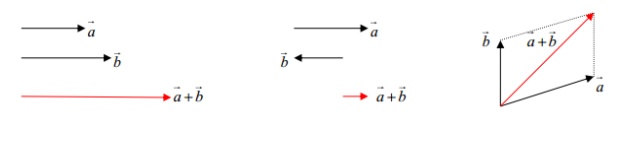
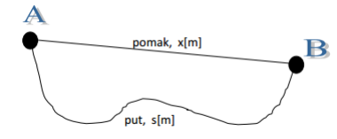
gibanje tijela
- promjena položaja tijela ili dijelova tijela s obzirom na drugo tijelo
- prema načinu gibanja razlikujemo pravocrtno (po pravcu) i krivocrtno (po krivulji)
- prije proučavanja gibanja tijela, prvo definiramo sustav iz kojeg promatramo drugo tijelo sljedećim parametrima
- ovisno o izboru sustava, gibanje tijela je različito (relativno)
- naš će sustav biti Zemlja (osim ako se u nekom zadatku traži neki drugi sustav) Materijalna točka
- točka koja ima svu masu tijela, ali nema njegove dimenzije
- koristi pri prikazu gibanja tijela koje istodobno prelazi staze
jednakog oblika i duljine Put i pomak
- Put
- duljina koju tijelo prijeđe od točke A do točke B
- oznaka s, mjerna jedinica m
- Pomak
- najkraća udaljenost između početnog i završnog položaja tijela pri gibanju
- oznaka x, mjerna jedinica m
- općenito je prijeđeni put u veći od pomaka Podjela fizičkih veličina
- skalare
- uz iznos imaju i mjernu jedinicu
- neki od primjera su put, vrijeme, masa, volumen…
-vektori
- uz iznos i mjernu jedinicu imaju i smjer
- neki od primjera su pomak, brzina, akceleracija, sila…
- zbrajanje vektora:
1. Vlak po kružnom zavoju polumjera 200 m prijeđe pola kruga. Koliko se pomaknuo od početka zavoja i koliki je put prešao?
2. Nogometaš se zagrijava trčeći oko pravokutnog igrališta duljine 100 m tako da započne trčati od jednog kuta i vrati se na to mjesto. Kolika je širina igrališta ako je pomak nogometaša, kada je na polovici staze, 112 m? Koliki su ukupni pomak i prijeđeni put nogometaša?
3. U x(t) grafu prikazano je gibanje nekog tijela. Koliko iznosi pomak, a koliko prijeđeni put tog tijela? Obrazloži svoj odgovor.
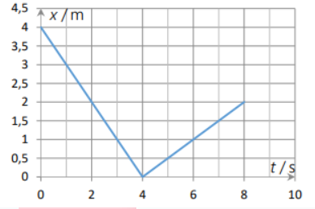
Brzina
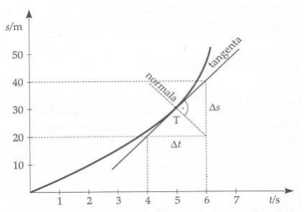
brzina
- fizička veličina kojom opisujemo razliku u gibanju dvaju tijela promjene u gibanju
- oznaka za brzinu je v, a mjerna jedinica m/s
- Primjeri brzina - srednja brzina tijela
-skalarna veličina
-omjer prijeđenog puta i vremena u kojem je tijelo taj put prešlo
v
sukupni/tukupni
- trenutačna brzina tijela
-vektorska veličina nalazi na pravcu tangente u točki na smjeru pomaka
-često se mijenja (osim ako je mjerimo u malom vremenskom razmaku) pa je omjer prijeđenog puta u tom vremenskom intervalu:
v→ =
Δs/Δt
, Δt->0
- možemo odrediti iz s(t) grafa nejednolikog gibanja nekog tijela:
- tijelo ne mijenja brzinu ako se iznos, smjer i orijentacija njegove brzine ne mijenjaju
1. Sunčeva svjetlost odbije se od prozora zgrade udaljene 600 m od vaše zgrade i stigne do vas na balkonu. Koliko je dugo odbijena svjetlost putovala od susjedne zgrade do vas ako je brzina svjetlosti 300000 km/s?
2. Odredite srednju brzinu gibanja automobila u vremenu jednog sata ako se prvih 20 minuta gibao srednjom brzinom 108 km/h, a ostalih 40 minuta srednjom brzinom 36 km/h.
3. Tijelo se dvije petine vremena giba srednjom brzinom 50 km/h, potom četvrtinu vremena srednjom brzinom 20 km/h dok se preostali dio puta giba srednjom brzinom 40 km/h. Kolika mu je srednja brzina tijekom cijeloga gibanja?
Akceleracija
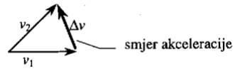
akceleracija
- fizička veličina kojom opisujemo promjenu brzine gibanja tijela u određenom vremenu
- oznaka za akceleraciju je a, a mjerna jedinica m/s2
- Primjeri akceleracija
- srednja akceleracija
-kvocijent promjene brzine i vremenskog intervala u kojem se promjena dogodila:
a
=
Δv/Δt
- trenutačna akceleracija
-omjer promjene brzine i vremenskog intervala u kojem se vrijednost ne mijenja:
a=
Δv/Δt
, Δt->0
- ima smjer vektora trenutačne promjene brzine - Razlika između ubrzavanja i usporavanja tijela
- ubrzavanje tijela označujemo pozitivnom akceleracijom
- usporavanje tijela označujemo negativnom akceleracijom
1. Biciklistu se pri spuštanju niz strmu ulicu poveća brzina od 18 km/h na 54 km/h za 10 s. Kolika je njegova akceleracija?
2. Osobni automobil počinje pretjecati autobus pri brzini 72 km/h ubrzavajući 2 m/s2 Koliku je brzinu automobil postigao na kraju pretjecanja ako je pretjecanje trajalo 5 s?
3. Zrakoplov se spusti na pistu i zaustavlja 20 sekundi. Kolika je njegova brzina pri spuštanju na pistu ako se zaustavljao akceleracijom 3 m/s2?
4. Automobil promijeni svoju brzinu od iznosa v do iznosa 2 v za vrijeme Δt pa se giba jednoliko ubrzano akceleracijom iznosa a. Koliki bi bio iznos akceleracije automobila kad bi promijenio svoju brzinu od 2 v do 3 v za vrijeme (Δt)/2? Obrazloži svoj odgovor.
3. Graf prikazuje gibanje dva tijela, A i B. Kolika će biti međusobna udaljenost ta dva tijela nakon vremena 20 t od početka gibanja?
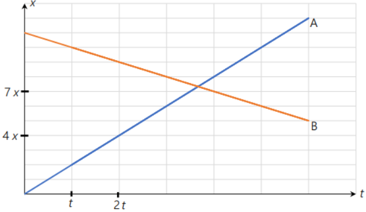
Jednoliko ubrzano i usporeno pravocrtno gibanje
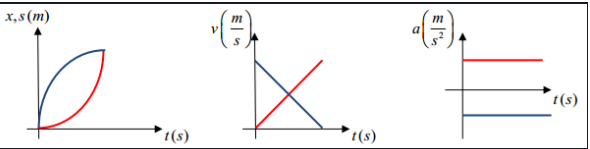
Jednoliko ubrzano i uporeno pravocrtno gibanje
- pojava kada tijelo povećava/smanjuje jednoliko svoju brzinu prilikom gibanja po pravcu
- pri tom gibanju akceleracija tijela jest konstantna
a=
δv/δt
v=v0+a*t
v2=v02+2*a*s
v(srednja)=
v0+vkonačna/2
s=v0*t+
1/2
*a*t2
-grafički prikaz gibanja u x(t), s(t), v(t) i a(t) grafovima:
- površina ispod crte u a(t) grafu odgovara promjeni brzine tijela
1. Iz zadanog a(t) grafa nacrtaj v(t) i s(t) graf:
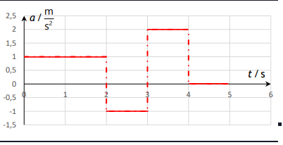
2. Iz zadanog x(t) grafa nacrtaj s(t) graf:
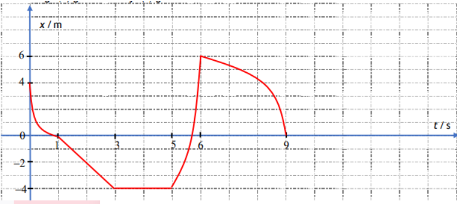
3. Iz zadanog v(t) grafa nacrtaj a(t), s(t) i x(t) graf:
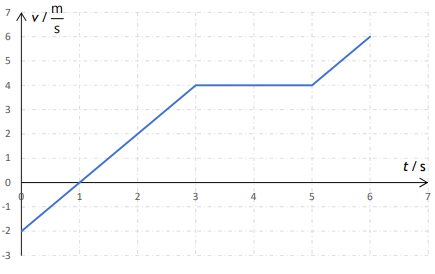
4. Tijelo se iz stanja mirovanja počinje gibati jednoliko ubrzano. Kolika je akceleracija tijela ako tijelo:
a) u osmoj sekundi prijeđe put od 15 m.
b) za osam sekundi od početka gibanja prijeđe put od 64 m?
Rješenje
5. Automobil vozi po horizontalnoj cesti brzinom 36 km/h. Vozač doda “gas” i za 10 sekundi postigne brzinu 54 km/h gibajući se jednoliko ubrzano.
a) Nacrtajte graf ovisnosti brzine o vremenu (v, t graf).
b) Kolika je bila akceleracija automobila?
c) Koliki je put prešao za tih 10 sekundi?
d) Kolikom se srednjom brzinom gibao automobil u tom vremenskom intervalu?
3. Automobil se giba jednoliko usporeno tako da mu se brzina smanji od 108 km/h na 54 km/h za 20 s. Koliki put prijeđe automobil za to vrijeme?
4. Tramvaj krene sa stanice jednoliko se ubrzavajući i za 10 s postigne najveću brzinu od 36 km/h.
a) Ako je iduća stanica udaljena 1 km, a za jednoliko zaustavljanje tramvaja treba jednako vremena kao i za ubrzavanje, koliko vremena se tramvaj giba jednoliko?
b) Kolika je srednja brzina tramvaja tijekom putovanja iskazana u km/h i m/s?
c) Nacrtajte ovisnost brzine o vremenu (v,t graf) gibanja tramvaja.
5. Razmak između dviju postaja je 9 km. Vlak prelazi taj razmak srednjom brzinom 54 km/h. Pri tome se počinje gibati jednoliko ubrzano 20 s, zatim neko vrijeme vozi stalnom brzinom, a tada mu za jednoliko zaustavljanje treba 20 s. Nacrtajte v,t graf gibanja vlaka i odredite njegovu najveću brzinu. Koliko vremena se vlak gibao stalnom brzinom?
6. Četiri jednadžbe opisuju ovisnost položaja tijela koje se giba duž x osi o vremenu t.
1) x = 3t – 2
2) x = – 4t – 2
3) x = 4t 2 – 4
4) x = 6t 2 + 2t
Ako je x u metrima i t u sekundama i t>0 odredite:
a) U kojim slučajevima je brzina konstantna i kolika je po smjeru i veličini?
b) U kojim slučajevima se tijelo giba stalnom akceleracijom i kolikom?
c) Gdje se nalazilo tijelo u trenutku t=0 u svakom pojedinom slučaju?
7. Ulazeći u stanicu, vlak počinje jednoliko usporavati. Izračunajte akceleraciju i početnu brzinu vlaka, ako prvih 50m prijeđe za 5s, a idućih 50m za 7 s.
8. Graf prikazuje ovisnost brzine v o vremenu t za tijelo koje se giba duž x osi.
a) Koji je predznak brzine u točkama P i K?
b) Postoji li trenutak u kojem se tijelo zaustavi?
c) Je li akceleracija tijela pozitivna ili negativna u točkama P i K?
d) Nacrtajte graf ovisnosti akceleracije tijela o vremenu.
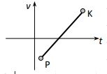
9. Dizalo se iz stanja mirovanja prve dvije sekunde podiže jednoliko ubrzano i postigne brzinu 2 m/s kojom nastavlja gibanje iduće četiri sekunde. Posljednje dvije sekunde dizalo se jednoliko usporava do zaustavljanja. Za koliko metara se dizalo podiglo?
10. Pravocrtno gibanje tijela duž x osi prikazano je jednadžbom: x = 2 t2 – 3 t +6
(sve jedinice su u SI sustavu).
a) Kolika je akceleracija tijela?
b) Kolika je početna brzina tijela?
c) Gdje se nalazi tijelo u trenutku t = 0?
d) Nacrtajte grafove ovisnosti pomaka x, brzine v i akceleracije a o vremenu t.
e) Napišite jednadžbu ovisnosti brzine tijela v o vremenu t? U kojem trenutku je brzina tijela jednaka nuli?
f) Koliki je pomak tijela u vremenskom intervalu od t1=1s do t1=4s?
Kolike su srednja brzina i srednja akceleracija tijela u vremenskom intervalu od t1=1s do t1=4s? 5.
Tijelo se giba pravocrtno stalnom akceleracijom. Za 2 sekunde prijeđe put od 10m. U iduće 2 sekunde prijeđe put od 22m (crtež).
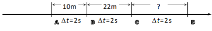
a) Kolika je akceleracija tijela?
b) Kolika su brzine tijela u točkama A, B, C i D?
c) Koliki je razmak između točaka C i D? 6.
11. Promatrač stoji pokraj početka prvog vagona vlaka. Vlak se počinje gibati jednoliko ubrzano. Vrijeme, koje je potrebno da pred promatračem prođe prvi vagon iznosi 4s.
a) Koliko dugo će pred promatračem prolaziti n–ti vagon?
b) Izračunajte vrijeme prolaska za deseti vagon tj. n=10.
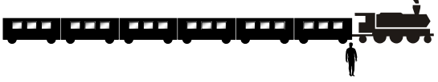
Newotonovi zakoni
Mišljenja
- Aristotel: tijelo se giba samo kad na njega djeluje sila
- Galileo Galilei: moguće je gibanje stalnom brzinom bez djelovanja neke vanjske sile na tijelo
- Isaac Newton- zakoni mehanike:
I. ZAKON TROMOSTI
Ako zbroj svih sila koje djeluju na tijelo iznosi nula (FR=0), tijelo miruje (ako je mirovalo) ili se jednoliko giba po pravcu (ako se iprije tako gibalo).
II. ZAKON GIBANJA
Ako je zbroj svih sila koje djeluju na tijelo različit od nula (FR≠0), tijelo se počinje gibati jednoliko ubrzano ili usporeno po pravcu u smjeru rezultante sile akceleracijom:
a→ =
Fr→/m
III. ZAKON SILE I PROTUSILE
Ako jedno tijelo djeluje na drugo nekom silom, istodobno drugo tijelo djeluje na prvo silom jednake vrijednosti i suprotnog smjera
1. Na tijelo mase 10 kg, prikazano na slici, djelujemo vanjskom silom F, čiji je iznos 3 N, no tijelo ostaje u stanju mirovanja. (ni 2007.) Koliki je iznos sile trenja između podloge i tijela?
2. Na tijelo koje se giba stalnom brzinom udesno počnu djelovati dvije sile, kako je prikazano na slici (trenje je zanemarivo). Kako će to utjecati na gibanje tijela?
3. Jabuka pada na Zemlju zbog gravitacijskog privlačenja između nje i Zemlje. Označi li se sila kojom Zemlja privlači jabuku s F1, a sila kojom jabuka privlači Zemlju s F2, u kakvome su odnosu iznosi tih dviju sila?
Guramo ormar po sobi stalnom horizontalnom silom iznosa F i on se zbog toga giba stalnom
brzinom. Na ormar osim sile guranja F djeluje i sila trenja Ftr između ormara i poda. U kakvom
su odnosu iznosi tih dviju sila?
5. Tijelo se giba jednoliko po pravcu po vodoravnoj podlozi. Pritom na tijelo u vodoravnome smjeru djeluju sila trenja iznosa 5 N i vanjska sila F u smjeru gibanja. Koliki je iznos sile F?
6. Na vodoravnom stolu leži knjiga mase 4 kg. Vertikalno prema dolje na knjigu djelujemo silom iznosa 30 N. Kolikom silom površina stola djeluje na knjigu?
7. Dvije kugle su na međusobnoj udaljenosti r. Masa prve kugle je m1=100 kg, a druge m2=50 kg. Kugle međudjeluju gravitacijskom silom. Na kojem su crtežu ispravno prikazani smjerovi i odnosi sila na kugle?
8. Čovjek rukom pritišće površinu stola. Kakav je iznos sile kojom ruka djeluje na površinu stola?
9. Dva tijela različitih masa, M > m, povezana su nerastezljivom niti i ovješena preko nepomične koloture kao što je prikazano na slici. Koji izraz opisuje ubrzanje tijela mase M? Masa koloture te trenje između koloture i niti su zanemarivi.
10. Na horizontalnoj podlozi nalaze se dva tijela masa m1 > m2 međusobno povezana nerastezljivom niti kao što je prikazano na slici.
Kolika je napetost niti N koja povezuje tijela ako na tijelo manje mase djeluje stalna sila F i ako se tijela gibaju ubrzanjem a? Zanemarite silu trenja između podloge i tijela.
Rješenje
11. Padobranac ima zajedno s opremom masu 110 kg. Kad se padobran otvori, padobranac pada stalnom brzinom. Koliko tada iznosi srednja sila otpora zraka na padobranca?
Rješenje
12. Sustav prikazan na slici sastoji se od jednog koloturnika zanemarive mase i dvaju tijela. Trenje između tijela mase m2 i stola, kao i trenje između niti i koloturnika mogu se zanemariti. Koliko iznosi akceleracija kojom se gibaju ova tijela?
13. Na tijelo djeluju dvije sile iznosa 3 N i 5 N kao što je prikazano na crtežu. Masa tijela je 4 kg. Koliki je iznos akceleracije tijela?
14. Tijelo A mase 2 kg i tijelo B mase 3 kg leže na horizontalnoj podlozi i međusobno se dodiruju kao što je prikazano na slici.
Na tijelo A djeluje horizontalna sila F = 10N. Kolikom silom tijelo B djeluje na tijelo A? Trenje je zanemarivo
Rješenje
15. Koliki je iznos stalne sile potrebne za ubrzanje automobila mase 1300 kg iz stanja mirovanja do brzine 72 km/h na putu 80 m?
Rješenje
16. Automobil mase 850 kg zaustavio se uslijed kvara na horizontalnoj cesti. Dva čovjeka pokušavaju ga gurati tako da djeluju paralelnim silama iste orijentacije. Jedan djeluje silom 275 N, a drugi silom 395 N na automobil. Sila trenja između ceste i automobila iznosi 560 N. Koliko iznosi akceleracija automobila?
Rješenje
17. Kolika je akceleracija padobranca u trenutku kada sila otpora zraka iznosi jednu četvrtinu sile teže koja na njega djeluje? Zanemarite uzgon u zraku.
Rješenje
233. Crtež prikazuje kolotur o koji su preko užeta ovješene dvije mase m1 = 1kg i m2 = 4kg. Zanemarite rastezanje užeta, te masu užeta i koloture prema masama tijela. (g 10m/s2 ) a) Kolika je akceleracija sustava? b) Kolika je sila napetosti užeta? c) Koliku silu pokazuje dinamometar D o koji je ovješena kolotura?
242. Osoba knjigu težine 20 N pritišće o strop. Sila kojom strop djeluje na knjigu iznosi 25 N (crtež). Kolikom silom djeluje knjiga na ruku osobe?
245. Jednaka sila djeluje na različite mase u horizontalnom smjeru. Koji od grafičkih prikaza ovisnosti akceleracije a o masi m najbolje prikazuje eksperimentalne podatke?
260. Na slici je prikazan sustav tri tijela. Zanemarite trenje s koloturom a za akceleraciju sile teže uzmite vrijednost g 10 m/s2 . Kolika je akceleracija sustava i kolike su napetosti niti N1 i N2 ako: a) nema trenja?
263. Dva traktora vuku automobil stalnom brzinom. Vučne sile traktora zatvaraju kut od 120 i svaka od njih ima vrijednost 1000N (crtež). Kolika je sila trenja.
275. Na horizontalnoj podlozi nalaze se dva tijela masa m1 = 4kg i m2 = 1kg. Tijela su povezana užetom (slika). Kolika je akceleracija kojom se gibaju tijela ako na njih djeluje stalna vučna sila Fvučna =10N u horizontalnom smjeru? Silu trenja između tijela i podloge zanemarite.
a) Kolika je napetost užeta ako na tijela djelujemo horizontalnom silom 10N tako da je hvatište sile na tijelu veće mase?
b) Kolika je napetost užeta ako na tijela djelujemo horizontalnom silom 10N tako da je hvatište sile na tijelu manje mase?
282. Dva tijela masa m1 = 1kg i m2 = 4kg, povezana užetom nalaze se na horizontalnoj podlozi (slika 1.). Trenje zanemarite. Sila kojom vučemo tijela iznosi Fv = 50N. a) Kolika je akceleracija gibanja sustava? b) Kolika je sila napetosti N užeta kojom su povezana tijela? c) Kolika će biti napetost užeta ako je hvatište vučne sile na tijelu manje mase (slika 2.)?
283. Dva tijela masa m1 = 1kg i m2 = 4kg, nalaze se na horizontalnoj podlozi (slika 1.). Trenje zanemarite. Sila kojom guramo tijela iznosi Fgu =50N. a) Kolika je akceleracija gibanja sustava? b) Kolikom silom djeluju tijela jedno na drugo? c) Kolikom silom će međusobno djelovati tijela ako je sila guranja promjeni hvatište (slika 2.)?
309. Tri tijela m1=5kg, m2 =4kg i m3 =3kg ovješena su na kolotur zanemarive mase (crtež). Niti se ne rastežu. Izračunajte:
a) akceleraciju sustava.
b) sile napetosti niti 1. i 2. o koje su ovješena tijela?
320. Tri tijela prikazana na crtežu leže na glatkoj podlozi (trenje je zanemarivo) i gibaju se pod utjecajem sile od 42 N.
Izračunajte:
a) akceleraciju sustava.
b) napetost niti između tijela mase 1 kg i mase 3 kg.
c) silu međudjelovanja između tijela mase 1 kg i mase 2 kg.
Izračunajte: a) akceleraciju sustava. b) napetost niti između tijela mase 1 kg i mase 3 kg. c) silu međudjelovanja između tijela mase 1 kg i mase 2 kg.
Tlak
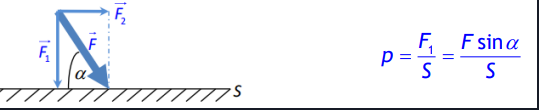
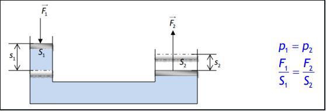
Tlak
- omjer okomite komponente sile i površine plohe na koju je ta komponenta okomita:
- oznaka je T, a mjerna jedinica Pa (paskal) i bar (1 bar je 105 Pa)
- Pascalov zakon
- Tlak kojim izvana djelujemo na zatvoreni idealni fluid prenosi se nesmanjen u svaki dio fluida i stjenke posude u kojoj se nalazi (kad fluid miruje, on je u ravnoteži, ali ako na negdjedjelujemo dodatnom silom, ona će se prenijeti u svim smjerovima jednako)
- primjer: stiskanje tube paste za zube, rad hidrauličnih strojeva
vrste tlakova
Atmosferski tlak
- tlak koji pritišće Zemljinu površinu zbog svoje atmosfere (ukupna težina molekula zraka)
- iznosi: p0= 101325 Pa pri standardnim uvjetima
- smanjuje se s povećanjem nadmorske visine
Hidrostatski tlak
- tlak koji se povećava s dubinom a jednako iznosi u svim smjerovima na istoj dubini
- p(h)=gqh
- zakon spojenih posuda (ako je fluid u ravnoteži i miruje, tlakovi na jednakim dubinama morajubiti jednaki)
- uređaje za mjerenje tlaka nazivamo barometar/manometar (registriraju razlike tlakova između sustava i okoline)
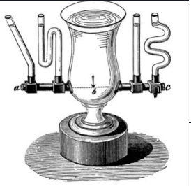
1. Valjkasta posuda visine 2 m ima kružni otvor polumjera 3 cm na visini 60 cm od dna posude. Kolika sila djeluje na čep stavljen u kružni otvor ako je posuda do vrha napunjena vodom? 2. Izračunaj koliki je ukupni tlak u jezeru na dubini 5,5 metara. 3. Izračunaj koliki je tlak (u barima)na oceanskom dnu na dubini 3000 m. Gustoća morske vode je 1024kg/m3 . 4. U U-cijev, u kojoj se nalazila voda, doliveno je uljenepoznate gustoće. Mjereno od razine na kojoj se voda i ulje dodiruju,stupac ulja ima visinu 5 cm, a stupac vode 37 mm. Kolika je gustoćaulja? 5. Na slici su prikazana posuda u koju ulijevamo vodu. Nakon štose uspostavi ravnoteža i voda se smiri kakva će biti razina vode upojedinim posudama i tlak u naznačenim točkama? Zaokružite točneodgovore. - a) Razina vode u svim djelovima posude A, B C i D je jednakakako je prikazano slikom. - b) Slika ne prikazuje točnu situaciju već jenajviša je razina u D, a najmanja u B. - c) Tlak u svim točkama od 1 do5 je jednak. - d) Najveći je tlak u točki 3 jer se iznad nje nalazinajveća masa vode. a), c) 6. Na slici je prikazana posuda ispunjenavodom. Kako se odnose tlakovi u pojedinim točkama posude A, B i C? a) pA= pB = pC b) pA = pC < pB c) pA = pC > pB d) pA > pB > pC e) pA < pB Al > zraka. Ako cijeli sustav smjestimo pod staklenozvono iz kojeg isišemo zrak što će se dogoditi? Zaokružite točanodgovor! a) Preteže aluminijska kugla. b) Preteže olovna kugla. c)Sustav i dalje ostaje u ravnoteži. 8. Tri posude a), b) i c) potpunojednakih dimenzija potpuno su napunjene vodom i stave se na vagu. Uprvoj je samo voda, dok se u druge dvije nalaze patkice različitihtežina (crtež). 1) Najveću težinu pokazuje vaga a) 2) Najveću težinupokazuje vaga b) 3) Najveću težinu pokazuje vaga c) 4) Sve tri vagepokazuju jednako. 9. . Dva homogena tijela, prvo izrađeno od hrastovinegustoće 0,8 g/cm3 i drugo izrađeno iz aluminija gustoće 2,7 g/cm3 bačenasu u vodu gustoće 1 g/cm3 . Oba tijela imaju jednaku masu od 1 g. Kojiod predloženih odgovora je ispravan nakon što se tijela smire? a) Većasila uzgona djeluje na tijelo izrađeno od aluminija. b) Veća sila uzgonadjeluje na tijelo izrađeno od hrastovine. c) Sila uzgona jednaka je naoba tijela. d) Na tijelo od hrastovine ne djeluje sila uzgona jer onopliva na vodi. e) Na tijelo od hrastovine ne djeluje sila uzgona jer onotone. 10. . U automobilskoj gumi nadtlak (tlak iznad atmosferskog tlaka)iznosi 2*105Pa. Ako je dodirna površina svake od četiri gume automobilas tlom 0,024m2 kolika je masa automobila? - Rješenje - 480kg 11.Normirani atmosferski tlak odgovara stupcu žive od 76cm (slika). Kolikibi stupac vode odgovarao tom tlaku ako znamo da je gustoća žive 13,6puta veća od gustoće vode? - rješenje - 9.792 m 12. U-cijev na slicinapunjena je vodom i uljem (slika) i cijeli sustav se nalazi u ravnotežiprema podacima sa slike. Ako je gustoća vode 103 kg/m3 kolika je gustoćaulja? 13. Plastična vrećica na slici sadrži otopinu glukoze gustoće1,2*103 kg/m3 . Ako je tlak u arteriji čovjeka na slici 1,33*104 Paiznad atmosferskog kolika mora biti najmanja visina h na kojoj držimovrećicu pa da otopina ulazi u arteriju? - rješenje
Uzgon
Uzgon
- sila u fluidima koja prividno smanjuje težinu tijela uronjenog u fluid onoliko koliko iznosi težina istisnute tekućine (Arhimedov zakon)
- uzgon postoji i u plinovima, ali je najčešće zanemariv (navedite primjer kad ne možemo zanemariti uzgon u zraku)
- formula za uzgon je: Fu=q(tekućine)*g*V(uronjenog tijela)
- kad tijelo ubacimo u tekućinu ono može raditi sljedeće:
- tijelo tone ako je Fg > Fu ili ρtijela>ρtekućine
- tijelo lebdi ako je Fg=Fu ili ρtijela=ρtekućine
- tijelo izranja ako je Fg < Fu ili ρtijela < ρtekućine
1. Kroz vodu podižeš veći kamen kojega želiš izvući na obalu. Koju promjenu osjećaš dok kamen izvlačiš iz vode? Je li kamen bilo lakše podizati dok je bio cijeli u vodi?
2. U čašu sa vodom na površinu spusti kuglicu plastelina. Skiciraj i opiši što uočavaš.
3. Kuglicu plastelina preoblikuj u malu lađicu i ponovno ju pusti na površinu vode. Skiciraj i opiši što sad opažaš objasni.
4. Silu kojom tekućina djeluje na uronjeno tijelo nazivamo...
5. a) U čašu s vodom stavi kokošje jaje. Opiši i skiciraj što si opazila. b) Dodaj 3 velike žlice soli i dobro promiješaj. Ponovno stavi jaje u vodu. Skiciraj i opiši što uočavaš. Opiši kako to objašnjavaš ?
6. Tijelo A ima masu 200 g i volumen 1 L, a tijelo B ima masu 100 g i volumen 10 cm3 . Što će se dogoditi s tijelima kad ih stavimo u vodu gustoće 1000 kg/m3 .
7. Tijelo mase 200 g i obujma 200 dm3 je polovicom svojega volumena uronjeno u vodu gustoće 1000 kg/m3 . a) Kolika sila uzgona djeluje na tijelo? b) Kolika sila teža djeluje na tijelo? c) Hoće li to tijelo, kad se stavi u vodu, tonuti, lebdjeti ili izranjati? d) Kolika bi bila prividna težina tog tijela u vodi?
Fluidi u gibanju
- promatramo idealne fluide (u njima nema unutrašnjeg trenja) - Gibanje fluida
- gibanje fluida može biti laminarno ili vrtložno
- laminarno gibanje
- pojavljuje pri malim brzinama
- može se predočiti pomoću strujnica (crta kojima se tangenta u svakoj točki podudara sa smjerom brzine gibanja)
- strujnice su za laminarno gibanje neprekinute krivulje
turbulentno gibanje
- brzina fluida postane veća od neke kritične brzine,slojevi fluida se miješaju, čestice prelaze iz jednog sloja u drugi i nastaju vrtlozi)
- vrtložno gibanje
- dijelovi se fluida gibaju po kružnim i vrtložnim stazama
- strujnice zavinute prekinute krivulje Strujanje fluida
- strujanje može biti stacionarno i nestacionarno
- stacionarno gibanje
pri gibanju strujnice ostaju nepromijenjene tijekom vremena
- ukoliko fluid teče kroz cijev, volumni protok iznosi:
q=
Vkorisna/tuložena
=S*v
- ako fluid protječe kroz cijev različitog presjeka, vrijedi jednadžba kontinuiteta:
q1=q2
S1v1=S2v2
- primijenimo zakon očuvanja energije na fluid unutar cijev - Bernoullijeva formula
- tlak p je tlak vanjskih sila (statički tlak),
- srednji član je hidrostatski tlak,
- zadnji je dinamički tlak koji nastaje zbog gibanja fluida
- ukoliko se u nekoj posudi nalazi tekućina i na visini h ispod površine vode probušimo rupu u posudi, tekućina će istjecati brzinom (Torricellijev zakon):
v=
√2*g*h
- ako je cijev na nekom mjestu osobito uska tada brzina u tom dijelu cijevi postaje vrlo velika pri čemu raste dinamički tlak te on možepostati veći od ukupnog tlaka
- da bi ukupni tlak ostao isti, statički tlak p mora postati negativan (pritom sila djeluje u suprotnom smjeru → prema unutra, a ne prema van) (rad raspršivača)
PRIMJENE BERNOULIJEVE JEDNADŽBE
1. Cijev kroz koju protječe benzin na širem dijelu ima promjer 5 cm, a na užem 2,5 cm. Kolike su brzine protjecanja benzina u a) širem dijelu cijevi, b) užem dijelu cijevi ako je maseni protok 17,5 kg/min? Gustoća benzina je 700 kg/m3 .
2. Za koliko se vremena napuni posuda volumena 0,72 m3 koja se puni vodom kroz cijev površine poprečnog presjeka 1 cm2 ako voda izlazi iz cijevi brzinom 2 m/s?
3. Voda struji kroz horizontalno postavljenu cijev čije su dimenzije dane na slici. Brzina kojom voda istječe iz užeg dijela cijevi je v2= 15 m/s. Koliki volumen vode prođe kroz cijev tijekom 10 minuta? Kolika je brzina vode u širem dijelu cijevi? Kolika je razlika statičkih tlakova između šireg i užeg dijela cijevi?
4. Mlazovi vode koji izlaze iz dviju malih rupica smještenih na udaljenosti 5 cm i 12 cm od dna posude napunjene vodom udaraju o pod na istom mjestu (crtež). Kolika je visina vode u posudi?
Primjene Bernoullijeve jednadžbe
Pojave i principi rada nekih uređaja koji se mogu objasniti
Bernoullijevom jednadžbom
Temperature (POTREBNO DORADITI ODAVDJE)
- proučavamo plinove; zamislimo plin u boci → sudari čestica sa stjenkama→ tlak Brownovo gibanje - dokaz kaotičnom gibanju - uzrok takvog gibanja su sudari čestica vode s česticama peluda
- ako posipamo čestice peluda po površini vode, uočit ćemo da se one kaotično gibaju - za razliku od plinova i kapljevina, gdje toplinsko gibanje čestica (molekula, iona, koloidnih čestica) uzrokuje međusobno miješanje dviju ili više tvari, u čvrstim tvarima atomi i ioni difuzijom mijenjaju mjesta u kristalnoj rešetki difuzija
- najbrža u plinovima, sporija u kapljevinama, a najsporija u čvrstim tvarima.
- Brzina difuzije neke tvari općenito se povećava s porastom temperature (jer se čestice gibajubrže) i smanjuje porastom gustoće
- kapljevine različitih molekularnih masa koje se međusobno mogu miješati (npr. voda i alkohol) difundirat će jedna u drugu dok će ioni ili molekule čvrstih tvari otopljenih u otapalu (npr. sol ili šećer u vodi) difundirat dok se ne postigne njihova jednolika koncentracija u otopini
- dva metala u dodiru pokazuju malu ali jasnu tendenciju međusobne difuzije
- moguća je i kroz polupropusnu membranu (pri osmozi i dijalizi)
- brzina kemijske reakcije često je određena brzinom difuzije reagirajućih čestica, posebno u reakcijama čvrstih tvari
- na difuziji se temelje i mnoge tehnološke operacije, proizvodnja elektroničkih elemenata u mikroelektronici i poluvodičkoj tehnici, modificiranje svojstava površinskih slojeva u metalurgiji, djelovanje difuzijskih vakuumskih pumpi i dr.
- srednja brzina molekula plina može se odrediti formulom
v(srednja)=
v1+...+vn/N
=problem?
- važnija veličina od srednje brzine je srednja kvadratna brzina ili efektivna brzina:
vef=
2√
v12+...+vn2/N
- općenito vrijedi ef v v - o čemu ovisi tlak plina u posudi?
p=
N/V
m1*vef2=
N/V
Ek1(srednja)
Temperatura
- fizička veličina kojom iskazujemo koliko jedno tijelo odstupa od toplinske ravnoteže s drugim tijelom
- povezana je uz srednju kinetičku energiju plina:
3/2
kB*T
- ukupna srednja kinetička energija svih molekula plina je Ek(srednja)=N*Ek1(srednja)
- Boltzmanova konstanta je kb=1.38*10-23JK-1
- temperaturu mjerimo termometrima
- najvažnije temperaturnie ljestvice su Kelvinova, Celsiusova Fahrenheitova
- njihov međusobni odnos
T(K)=t(celzijus)+273.15
t(fahren)=
9/5
t(celzijus)+32
- ovdje je važno uočiti da je ∆t(°C)=∆T(K)
- temperaturu od 0 K (apsolutna nula) nije moguće postići uređajem ili termodinamičkim procesom, već se može samo približiti
- na apsolutnoj nuli molekule u tijelima imaju najnižu moguću energiju
1. Temperaturu od 12 °C iskaži u °F i K!
2. Kolika je srednja kinetičkaenergija translatornog gibanja molekula helija i argona pri temperaturi1200 K?
3. Pet čestica idealnog plina helija ima brzine iskazane u m/s:500, 600, 700, 800 i 900. Izračunajte: - a) srednju brzinu, - b)efektivnu brzinu po čestici, - c) temperaturu plina ako je molarna masaplina 4 g/mol.
4. Pri kojoj će temperaturi termometri koji mjere u °C i°F pokazivati istu vrijednost?
5. Kolika je srednja kinetička energija iefektivna brzina molekule kisika u zraku pri temperaturi 20°C? Masamolekule kisika iznosi 5,3∙10-26 kg.
6. Odredite temperaturu pri kojojatom helija (m=6,63∙10-27 kg) ima brzinu 3000 m/s 1. U cilindru senalazi 10m3 kisika [M(O2)=32g/mol] pri standardnim uvjetima. Kolika jeto količina tvari iskazana molima? Kolika je masa kisika? 2. U cilindruse nalazi 25,5mol helija temperature 10C i tlaka 1,35atm. Koliki jevolumen helija? 3. Zatvoreni cilindar sadrži zrak na temperaturi 100 C.Na kojoj bi temperaturi trebao biti zrak u posudi da tlak bude dva putaveći? 4. Idealni plin mase m zatvoren u cilindru volumena V imatemperaturu T i tlak p. Ako se masa plina poveća na 3m, temperaturasnizi na T/3 i volumen smanji na V/3 tlak plina u cilindru će biti: a) p/ 3 b) p c) 3 p d) 9 p e) 27 p 5. U zatvorenoj posudi nalazi se plin natemperaturi 27 C i tlaku p0. Ako se plin zagrije na temperaturu 327Ctlak će biti: a) p0 / 2 b) 3 p0 c) 4 p0 d) 2 p0 e) p0 6. Mjehurićidealnog plina poveća svoj volumen kada se s dna jezera penje premapovršini dva puta. Kolika je dubina jezera pod pretpostavkom da jetemperatura vode jednaka na svim dubinama? (g10m/s2 ; vode=103kg/m3 ;patmos.=105Pa)
7. Određena masa plina ima temperaturu 27C, tlak 1,7bara pri volumenu 6,5 litara. Kolika će biti temperatura plina ako setlak poveća na 3,5 bara, a volumen smanji na 4,2 litre?
8. Temperatura usobi volumena 50 m3 povisi se od 10 C na 20 C. Pri tom je tlak stalani iznosi 105 Pa. Za koliko se promijeni masa zraka u sobi? (Mzraka = 29g/ mol)
9. Tlak u žarulji pri temperaturi 20C iznosi 0,9·105 Pa. Kolikije tlak u žarulji kad se zrak u njoj ugrije na 127C?
10. Kolika jetemperatura plina u zatvorenoj posudi ako mu se tlak povećao za 1% pripromjeni temperature za 3 K?
Plinski zakon
- pri proučavanju plinova koristit ćemo model idealnog plina za koje mora vrijediti:
- volumen molekula plina može se zanemariti prema volumenu posude u kojoj se plin nalazi
- zanemaruju se međumolekulske sile
- međusobni sudari molekula i sudari sa stjenkom posude su savršeno elastični
- makroskopske fizikalne veličine koje možemo izravno mjeriti i mijenjati u plinova su temperatura, tlak i volumen
- pri mjerenjima možemo jednu od ove tri veličine držati konstantnom i promatrati kako se mijenjaju preostale dvije, - pa govorimo o 3 plinska zakona:
- 1.) Boyle-Marriotteov zakon (T=konst., izotermna promjena)
pv=konst.
p1V1=p2V2
- 2.) Gay-Lussacov zakon (p=konst., izobarna promjena)
V/t
=konst.
V1/T1
=
V2/T2
- 3.) Charlesov zakon (V=konst., izohorna promjena)
p/T
=konst.
P1/T1
=
p2/T2
- ukoliko se sve tri veličine mijenjaju, prijašnja tri zakona zajedno zapisujemo u obliku:
pV/T
=konst.
- konstanta se može naći eksperimentalno, pa dobivamo jednadžbu poznatu kao opća plinska jednadžba:
pV/T
=nR=Nkb
- R= 8,314 Jkg-1mol-1 je opća (univerzalna) plinska konstanta
- iz kemije znate da je
n=
N/Na
=konst.
- gdje je Na=6,022∙1023 mol-1 Avogadrov broj
1. U pV, VT, Tp, Vp, TV i pT dijagramima prikaži slijedeće promjenestanja plina: izobarna → izotermna → izohorna, uz uvjet da se volumensmanjuje kad nije konstantan. - rješenje
2. U pV, VT, Tp, Vp, TV i pTdijagramima prikaži slijedeće promjene stanja plina: izotermna →izohorna → izobarna, uz uvjet da se temperatura povećava kad nijekonstantna. - rješenje
3. U pV, VT, Tp, Vp, TV i pT dijagramima prikažislijedeće promjene stanja plina: izohorna → izobarna → izotermna, uzuvjet da se tlak smanjuje kad nije konstantan. - rješenje
Toplinsko širenje i stezanje tvari
- tijela se pri zagrijavanju rastežu (metali npr.) ili stežu (guma, čvarci)
- ako rastezanje tijela promatramo u jednoj dimenziji, govorimo o linearnom širenju tijela:
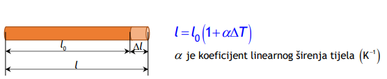
- no, zbog oblika tijela je ponekad nemoguće zanemariti ostale dimenzije, pa govorimo o volumnom širenju tijela:
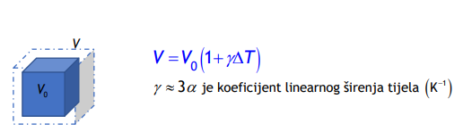
- primjenu širenja i skupljanja tijela pri određenoj temperaturi su žice dalekovoda, širenje i skupljanje mostova, tračnica vlakova i tramvaja,...
- najpoznatija tvar koja pokazuje odstupanja od ovih razmatranja je voda (anomalija vode)
- voda je najgušća pri 4°C, a gustoća joj se smanjuje povišenjem i sniženjem temperature
- pogledajmo kako se gustoća mijenja s toplinskim širenjem tijela:
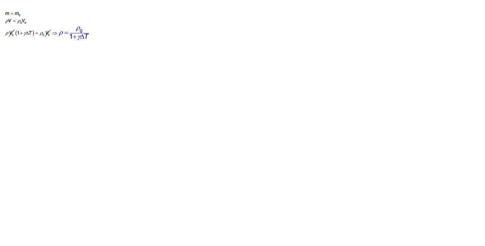
1. Štap od platine (α=9·10-6 K -1 ) dugačak je pri 20°C 998 mm. Prikojoj će temperaturi štap biti dugačak 1 m? 2. Staklena boca (α=0,9·10-5K -1 ) ima obujam 2000 cm3 pri 0°C. Pri 0°C boca je do ruba napunjenaalkoholom (γ=1,135·10-3 K -1 ). Koliko će alkohola izaći iz boce kad jeugrijemo na 50°C? 3. Gustoća zlata (α=1,4·10-5 K -1 ) pri 20°C je 19,30g/cm3 . Nađi gustoću zlata pri 90°C.
Toplina ili unutarnja energija
toplina
energija koja prelazi s jednog tijela na drugo zbog njihove temperaturne razlike
- oznaka za toplinu je Q, a mjerna jedinica J
- načini prijenosa topline
1.) kondukcija (vođenje) - kinetička se energija prenosi od molekule do molekule sudarom (svojstveno čvrstim tijelima, npr. žlica u posudi za čaj)
2.) konvekcija (prijenos) - nastaje kad molekule mijenjaju svoj položaj u prostoru zbog toplinske neravnoteže (svojstveno fluidima, npr. zagrijavanje zraka)
3.)radijacija (zračenje) - toplina se prenosi elektromagnetskim zračenjem (fotonima)
Unutarnja energija
- zbroj kinetičke energije toplinskog gibanja molekula i potencijalne energije međumolekulskog gibanja nekog tijela
- oznaka je U, a mjerna jedinica J:
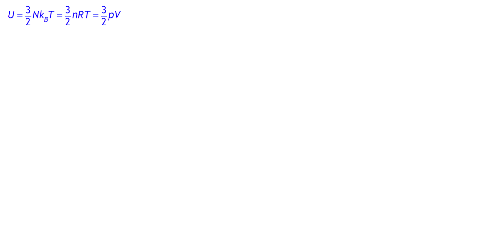
- može se mijenjati toplinom (zagrijavanjem raste U) i radom (U se smanjuje kad tijelo obavlja rad)
specifični toplinski kapacitet
1. Usporedite unutarnju energiju čaše vode temperature 100 C i oceana temperature 20 C.
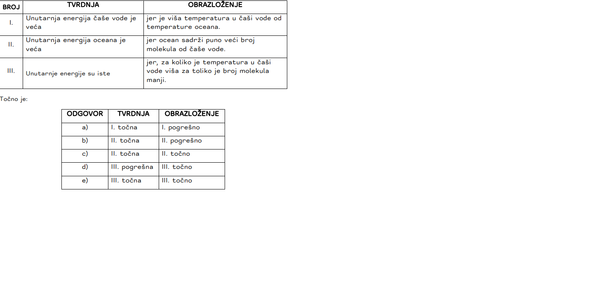
2. Tijelo izrađeno od bakra mase 50g ima temperaturu 25C. Kolika ćebiti konačna temperatura tijela ako pri zagrijavanju apsorbira 1200Jtoplinske energije. (c bakra=387J/kgK) 3. Temperatura vode na vrhuslapa visokog 50m iznosi 10C. Kada bi se sva potencijalna energija vodepretvorila na dnu slapa u toplinsku izračunajte kolika bi bilatemperatura vode na dnu slapa? (g=9,81m/s2 ; c vode=4186J/kgK) 4.Projektil brzine 200m/s udari u zemljani nasip i zabije se u njega. Akoje specifični toplinski kapacitet materijala iz kojeg je načinjenprojektil 460J/kgK i ako je pri zaustavljanju 60% početne kinetičkeenergije utrošeno za zagrijavanje projektila, koliko će biti povećanjetemperature projektila? 5. Na istom uređaju zagrijavamo tijelo A itijelo B. Oba tijela imaju jednaku masu i apsorbiraju jednaku količinutopline. Ako se pritom tijelu A temperatura povisi za 3C, a tijelu B za4C koje tijelo ima veći specifični toplinski kapacitet?
Zakoni termodinamike
Termodinamika
- dio fizike koji proučava vezu između topline i drugih oblika energije kao i pretvaranje topline u mehanički rad
- najjednostavniji termodinamički sustav je plin zatvoren u cilindru s pomičnim klipom (sustav izmjenjuje energiju s okolinom u obliku toplineQ i mehaničkog rada W)
- termodinamički proces je promjena stanja nekog sustava
- primjer: sustav sa kružnim procesima gdje se sustav vraća u prvobitno stanje, toplinski strojevi su uređaji koji obavljaju neki termodinamički proces
- Zakoni termodinamike
- prvi zakon termodinamike
- poseban zakon očuvanja energije za situaciju gdje do promjene unutarnje energije dolazi zbog izmjene topline i/ili rada s okolinom:
- u ovom izrazu Q je pozitivna (+) kad se dovodi sustavu - W je pozitivna (+) kad ga obavlja sustav - ΔU je pozitivna (+) kad se unutarnja energija sustava povećava
- ukoliko pogledamo kružni proces (za koji vrijedi ΔU=0 == Q=W), sva se dobivena toplina može pretvoriti u mehanički rad
- stroj koji bi dao više rada od uložene topline zovemo perpetuum mobile prve vrste i on je nemoguć
- prvi zakon termodinamike ne govori ništa o iskoristivosti samog toplinskog stroja i smjeru procesa (povratan ili nepovratan)
- drugi zakon termodinamike
- govori o uvjetima u kojima se iz topline može dobiti mehanički rad (promatramo dva spremnika različite temperature)
- prijenos topline pri kružnom procesu iz spremnika niže temperature u spremnik više temperature bez uloženog vanjskog rada je nemoguć - nemoguće je dobiti rad crpeći toplinu samo iz jednog spremnika == perpetuum mobile druge vrste je nemoguć
- drugi zakon termodinamike opisuje se i entropijom (fizička veličina koja pokazuje sposobnost sustava da se spontano promijeni, a mjera je nereda nekog sustava)
- drugi zakon termodinamike tada glasi: Izolirani sustav spontano prelazi iz sređenih stanja u stanja najvećeg nereda (maksimalne entropije)
- prirodni procesi su nepovratni i odvijaju se spontano od stanja manjeg ka stanju većeg nereda u sustavu
- treći zakon termodinamike:
- Nije moguće konačnim brojem procesa sniziti temperaturu bilo kojeg sustava na 0 K.
Radovi plina pri određenim termodinamičkim procesima
a) rad plina pri izobarnom procesu
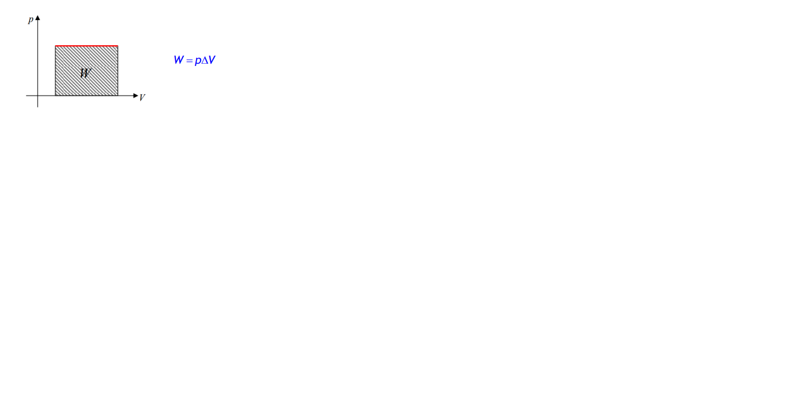
b) rad plina pri izohornom procesu
c) rad plina pri izotermnom procesu
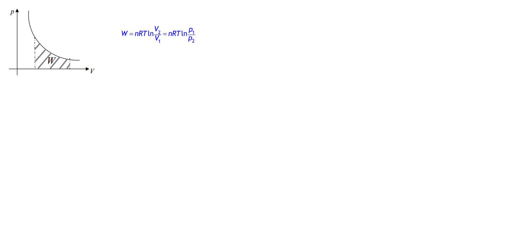
d) rad plina pri adijabatskom procesu
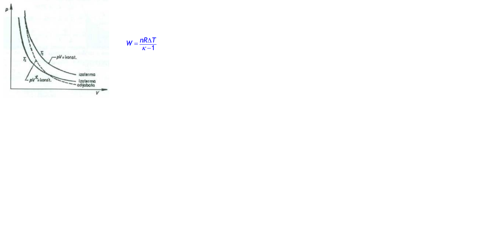
- adijabatski proces
- nema izmjene topline između sustava i okoline (Q=0 == W=-ΔU (sustav obavlja rad na račun unutrašnje energije))
- jednadžba adijabatske promjene plina je:
- adijabatski koeficijent - 1 je manji od k je manji od 2
- za jednoatomne plinove ne ovisi o temperaturi i iznosi 1,67,
- za dvoatomne oko sobne temperature je 1,4
- za višeatomne ovisi o temperaturi plina i vrsti plina
1. Idealni plin pri adijabatskoj ekspanziji daje 25 J rada. Kolika jepromjena unutrašnje energije plina? 2. Idealni plin nalazi se u cilindru čiji klip ima površinu 0,1 m2 . Tlak plina iznosi 1 bar. Kada plinizobarno zagrijavamo, klip se podigne za 4 cm. Ako smo pritom plinu doveli 42 kJ topline, za koliko se promijenila unutarnja energija plina pri tom procesu? 3. Jednoatomni idealni plin prolazi kružni proces A → B → C → A prikazan na crtežu. a) Navedite koji se procesi zbivaju tijekom kružnog procesa. b) Kod kojeg procesa neće doći do promjene unutarnje energije plina? c) Dobiva li se mehanički rad tijekom ciklusa A → A ili se on mora uložiti?
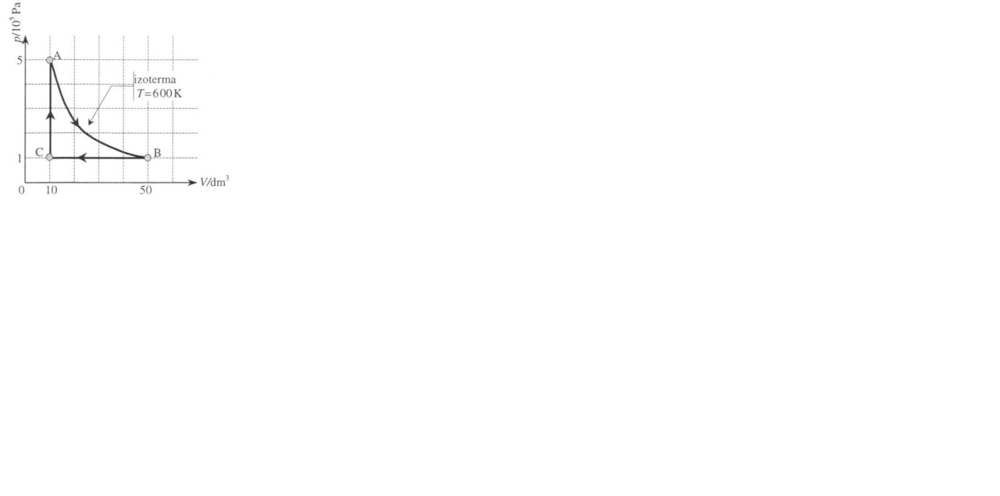
Kalorimetrija
kalorimetrija
- mjerenje promjene topline tijekom kemijske reakcije, promjene stanja, formiranja otopine ili događaja koji uključuje prijenos topline primjer: miješanje tvari različitih temperatura
- mjerenje se obavlja u uređajima koje zovemo kalorimetri
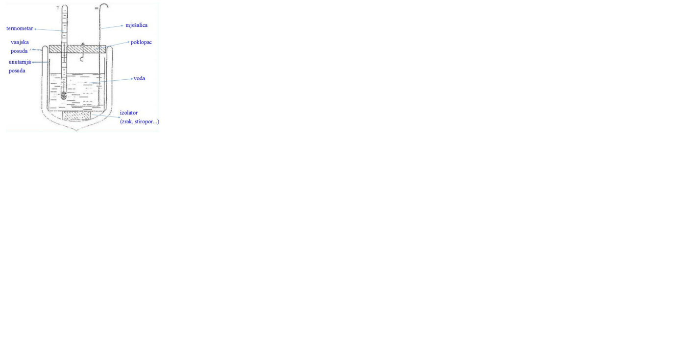
- miješanje dvije tvari (npr. tekućine) različitih temperatura
- toplinska ravnoteža stanje tvari koje nastaje nakon dodira tvari različitih temperatura pri čemu toplina prelazi s toplije na hladniju tvar do izjednačenja njhove temperature:
1. U vodu (c=4190 J/(kgK)) temperature 30°C ulijemo jednaku masu žive(c=130 J/(kgK)). Temperatura pri kojoj je nastupila toplinska ravnoteža iznosi 35°C. Nađi početnu temperaturu žive. 2. Koliko litara vode temperature 15°C treba uliti u posudu koja sadrži 10 litara vode temperature 100°C da bi smjesa imala temperaturu 40°C? 3. Kad pripremamo kupku, pomiješamo hladnu vodu od 12°C i vruću od 70°C. Koliko hladne i tople vode treba pomiješati da bismo dobili 600 litara vode od 37°C? 4. U mjedenom kalorimetru (c=380 J/(kgK)) mase 120 g nalazi se 100 g petroleja temperature 20°C. u petrolej stavimo željezni uteg (c=460 J/(kgK)) mase 200 g kojeg smo prethodno ugrijali na 96°C. Temperatura petroleja porasla je na 40°C. Koliki je specifični toplinski kapacitet petroleja?
Promjena agregatnih stanja
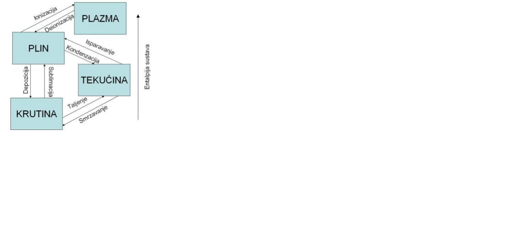
Plazma
posebno stanje materije
- vrste plazmi
- plazme koje možemo dotaknuti da nam se ništa ne dogodi (plazmena igla),
- plazme koje nas mogu spržiti (plamen ili munje)
- plazme u kojima se sve tvari razgrađuju na osnovne elemente (plazmene mlaznice za spaljivanje otpada),
- plazme u kojima se jezgre atoma spajaju (tokamak),
- plazme u čijem laganom sjaju možemo uživati (polarna svjetlost),
- plazme uz čiju pomoć možemo noću čitati (fluorescentne cijevi, štedne žarulje),
- plazme kojima lakše vozimo gradom (visokotlačne natrijeve žarulje)
- plazma koja nas može oslijepiti ako gledamo direktno u nju (Sunce)
- parametri: temperature čestica, gustoće čestica, i jakosti stacionarnog magnetskog polja
Promjena agregatnih stanja vode
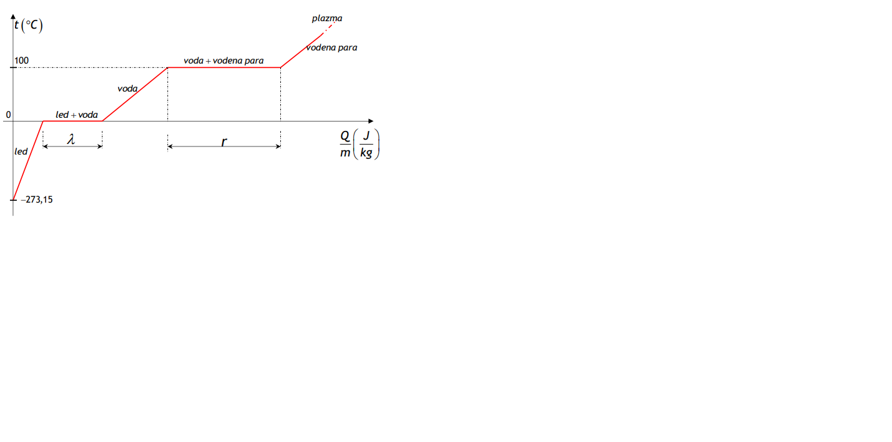
- taljenje leda odvija se pri 0°C (talište); toplina potrebna za taljenje leda mase m je latentna toplina taljenja:
- talište ovisi o tlaku (ako se tvar pri zagrijavanju širi, a tlak raste Tt se smanjuje) i o primjesama (talište legura je niže od tališta njihovih sastavnih elemenata) - isparavanje vode odvija se pri 100°C (vrelište); toplina potrebna da se ispari voda mase m je latentna toplina isparavanja:
- vrelište ovisi o tlaku (veći tlak, veća Ti) i o primjesama (ovisno o primjesi može se ili povećati ili smanjiti) - općenito vrijedi da je λ >r
1. Koliko je topline potrebno za zagrijavanje 500 g leda od temperature -20°C do 105°C? Konstante: cL=2100 J/(kgK), λ=3,35·105 J/kg, cV=4190 J/(kgK), r=2,26·106 J/kg, cVP=1900 J/(kgK). Prikaži ove promjene agregatnih stanja u t(Q) grafu! 2. Koliko je topline potrebno za zagrijavanje 20 dag leda od temperature 0°C do 80°C? Prikaži ove promjene agregatnih stanja u t(Q) grafu! t C( ) Q J m kg led led voda + voda voda vodena para + vodena para plazma −273,15 0 100 r 3. Da bismo ohladili 5 L vode od 20°C do 8°C, bacimo u vodu komad leda od 0°C. Koliko je leda potrebno za hlađenje vode? 4. Na površinu leda pri 0°C stavimo mjedeni uteg (c=380 J/(kgK)) mase 200 g ugrijan do 100°C. Kolika će se masa leda rastaliti pod utegom ako se on ohladi do 0°C? 5. U jednu litru vode temperature 18°C bačen je komad željeza (c=460 J/(kgK)) mase 100 g ugrijan na 500 °C. Koliko je vode prešlo u paru ako je konačna temperatura 20°C? 6. Kolikom brzinom mora letjeti olovno tane (c=130 J/(kgK)) da se pri udaru o zapreku rastali (na 327°C)? Početna je temperatura taneta bila 27°C. Pretpostavimo da sva energija taneta pri sudaru prijeđe u toplinu
Cartonov kružni proces
Cartonov kružni proces
- idealizirani kružni termodinamički proces s najvećim koeficijentom korisnosti
- odvija se između dvije izoterme i dvije adijabate
- radna tvar je idealni plin
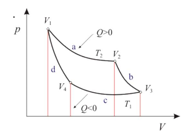
- korisnost ovog procesa ovisi samo o temperaturama spremnika, a ne i o vrsti plina:
η=-1
T2/T1
- inverzni Carnotov kružni proces (rashladni stroj)
- iz spremnika niže temperature oduzima toplinu Q2 i predaje spremniku više temperature toplinu Q1
- takvom je procesu potrebno uložiti rad koji je veći od onoga rada što ga sustav predaje okolini
- rashladni učinak (efikasnost) jest omjer topline oduzete spremniku niže temperature i uloženog rada:
ε=
Q2/W
=
T2/T1-T2
1. Odredi korisnost toplinskog stroja ako je poznato da je za vrijeme jednog kružnog procesa utrošen rad 3 kJ, a hladnijem spremniku predana energija od 16 kJ. 2. Plin koji izvodi Carnotov kružni proces obavi rad 300 J na svakih 2 kJ topline dobivene od toplijeg spremnika. Kolika je korisnost djelovanja toga kružnog procesa? Koliko je puta temperatura toplijeg spremnika veća od temperature hladnijeg spremnika? 3. Parni stroj koji bi radio po Carnotovu procesu ima temperaturu toplijeg spremnika 100C. Kolika bi bila korisnost stroja ljeti kada je temperatura okoline tj. hladnijeg spremnika 27C, a kolika zimi kada je temperatura okoline −3C? 4. Toplinski stroj radi po idealnom Carnotovu kružnom procesu. Pritom radna tvar od grijača dobiva 6300 J topline a 80% te topline predaje hladnijem spremniku. a) Kolika je korisnost stroja? b) Koliki rad daje taj stroj? 5. U radu nekog toplinskog stroja radno tijelo primi od toplijeg spremnika 2,5 MJ topline dok hladnijem preda 1,5 MJ toplinske energije. Izračunajte korisnost stroja. Kolika bi bila korisnost kad bi stroj radio između spremnika temperatura 327C i 27C po Carnotovu kružnom procesu? Je li moguć takav stroj? 6. Najveća korisnost nekog stroja koji bi radio po Carnotovu kružnom procesu iznosi 30%. a) Ako stroj izbacuje plin u atmosferu čija je temperatura 27°C kolika je temperatura iskazana u °C spremnika u kojem se obavlja izgaranje tvari koja ga grije? b) Ako takav stroj daje pri svakom ciklusu 251J mehaničkog rada koliko topline tijekom jednog ciklusa apsorbira od spremnika u kojem se obavlja izgaranje? 7. Uređaj za “klimatizaciju” može ljeti kuću hladiti, a zimi grijati. Kolika je efikasnost klimatizacijskog uređaja (ljeti i zimi) koji bi radio prema obrnutom Carnotovu kružnom procesu te bi ljeti hladio kuću od 30C na 25C, a zimi grijao kuću od 0C do 22C?
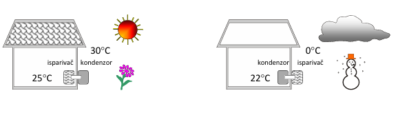
8. Plin izvodi Carnotov proces i tijekom jednog ciklusa daje 400J mehaničkog rada na svakih 1600J topline predane hladnijem spremniku. Koliko je puta temperatura toplijeg spremnika veća od temperature hladnijeg spremnika? 9. Kolika bi trebala biti temperatura toplijeg spremnika da bi se moglo 60% uložene topline pretvoriti u mehanički rad pri vanjskoj temperaturi od 27 C, kad bi toplinski stroj radio po Carnotovom procesu? 10. Pri inverznom Carnotovom procesu (hladnjak) od spremnika niže temperature −3C oduzimamo količinu topline 180 J, tijekom jednog ciklusa, pri uloženom radu od 20 J. Kolika je temperatura višeg spremnika?
Električni naboji i električna sila
- elektrostatika=dio fizike koji proučava električne naboje u mirovanju, elektrostatsku silu među nabojima i svojstva elektrostatskog polja
- Tales (6. st. BC) tijelo natrljano tkaninom privlači lake predmete (električki nabiti)
- Benjamin Franklin (18. st.) postoje dvije vrste naboja (pozitivni i negativni)
- Charles Augustin de Coulomb izmjerio silu između 2 naboja i formulirao osnovni zakon elektrostatike
- u 19. st. Faraday, Amperé i Maxwell otkrivaju osnovne zakone elektromagnetizma -
- negativni naboji su elektroni, a pozitivni protoni
- trenjem naboje razdvajamo
- istoimeni naboji se odbijaju, a raznoimeni privlače
- zakon očuvanja naboja: Zbroj svih električnih naboja u izoliranom sustavu stalno je konstantan. - naboj označavamo sa Q, a mjerna jedinica je C
- najmanji naboj u prirodi je elementarni naboj koji iznosi e= 19−1,6 10 C
- naboj nekog tijela može biti samo cjelobrojni višekratnik elementarnog naboja: Q=N*e
- uređaj za mjerenje naboja je elektroskop/elektrometar
- s obzirom na električna svojstva materijali su
- vodiči (kovine, vodene otopine soli, kiseline i lužine)
- izolatori (keramika, staklo, ebonit, jantar, parafin, sumpor)
- poluvodiči (silicij i germanij)
- PLOŠNA GUSTOŽA naboja
- sav senaboj nalazi na površini vodiča,
- q=Q(naboj)/S(površina)
- veća je vrijednost tamo gdje je zakrivljenost vodiča veća
uzrok privlačenja i odbijanja naboja
F=
1/4*φ*ε0*εr
*
Q1*Q2/r2
ε0=8.854*1012C2Nm2 je apsolutna dielektričnost vakuuma
εr je relativna permitivnost sredstva u kojem se nalaze naboji
k=
1/4*φ*ε0
=9*109Nm2C-2 je električna konstanta
1. Dvije jednake kuglice nose naboje -1 mC i 4 mC. One se najprije dodirnu, a potom razmaknu na udaljenost 25 cm. Kolika je kulonska sila nakon razmicanja? 2. Sila između dvaju točkastih naboja u nekoj tekućini udaljenih 20 cm jednaka je sili kojom ti naboji u zraku međusobno djeluju kada su udaljeni 30 cm. Kolika je relativna permitivnost tekućine? 3. Kuglica mase 0,3 g i naboja -10-8 C visi na tankoj niti. Na kojoj udaljenosti ispod nje treba učvrstiti točkasti naboj -17·10-6 C da bi napetost niti postala dvaput manja? 4. Četiri jednaka naboja nalaze se u vrhovima kvadrata. Ako između dvaju naboja na istoj stranici kvadrata djeluje sila F, kolika je rezultantna sila na svaki naboj?
Električno polje
- ELEKTRIČNO POLJE
- prostor oko naelektriziranog tijela u kojem se očituje djelovanje tog tijela
- opisujemo ga pomoću njezine jakosti:
E=
F(električna sila)/Q(naboj)
- predočeno je električnim silnicama (zamišljenim krivuljama tangente koje leže na pracu polja točke)
- područje gdje su silnice gušće električno polje je jače
VRSTE ELEKTRIČNOG POLJA
- homogeno električno polje
- ima jednak iznos i smjer u svim točkama, pa su silnice paralelne i jednako udaljene jedna od druge:
E=
U/D
+radijalno električno polje
- razmaci između silnica nisu jednaki
Superpozicija električnih polja
IZGLED ELEKTRIČNIH POLJA
Električno polje vodljive metalne sfere
1. Na naboj 0,2 µC u nekoj točki električnog polja djeluje sila od 15 mN. Kolika je jakost polja u toj točki? 2. Dva naboja, 15 nC i 300 nC nalaze se u zraku udaljeni 60 cm. Kolika je jakost električnog polja u sredini između njih? 3. Aluminijsku kuglicu (ρ=2700 kg/m3) mase 9 g i naboja 0,1 µC stavimo u ulje (ρ=900 kg/m3). Kolika je jakost električnog polja koje djeluje na kuglicu ako ona u ulju lebdi, a polje ima smjer vertikalno prema gore? 4. Točkasti naboj od 5 nC stvara na nekoj udaljenosti r od naboja električno polje jakosti 5 N/C. Kolika je udaljenost r? 5. Naboji od 2 nC i 4 nC nalaze se na međusobnoj udaljenosti 2 m. Na kojem će mjestu između njih jakost električnog polja biti jednaka nuli?
Električna potencijalna energija
- ako slobodni naboj dovedemo u neku točku električnog polja i pustimo ga, polje će na naboj djelovati električnom silom i pomicati ga u smjeru sile električna sila obavlja rad
- isto tako naboj koji se nalazi u električnom polju ima neku električnu potencijalnu energiju, ovisno o mjestu na kojem se u polju nalazi
- ako se + naboj pomakne u smjeru električnog polja (električne sile), potencijalna energija naboja se smanjuje
- promotrimo naboj u homogenom električnom polju:
- rad potreban da pomaknemo + naboj od ploče B do A (duž silnice!): WAB=Fd=QEd=QU
- pritom se potencijalna energija naboja povećala (veća udaljenost od – ploče) za iznos WBA
- izraz za potencijalnu električnu energiju dva točkasta naboja je
Električni potencijal i napon
- umjesto s potencijalnom energijom u elektricitetu se obično služimo fizičkom veličinom
potencijal, tj. razlikom potencijala
- potencijal neke točke A električnog polja definira se omjerom potencijalne energije u toj točki polja i naboja dovedenog u tu točku:
φa=
Epa/Q
- između rada i električne energije postoji veza (rad je jednak promjeni energije), pa potencijal možemo definirati i na slijedeći način: potencijal u danoj točki električnog polja jednak je radu koji je potrebno obaviti da bi se jedinični pozitivni naboj prenio iz beskonačnosti u tu točku (uvjet: naboj ne ubrzava!)
- uočimo da je potencijal svojstvo električnog polja bez obzira nalazi se u tom polju naboj ili ne
- potencijal točkastog naboja računamo po formuli:
φ=
k/ϵr
*
Q/r
- potencijal možemo zorno pokazati pomoću ekvipotencijalnih ploha (=skup točka na istom
potencijalu):
- uočimo da su silnice uvijek okomite na ekvipotencijalne plohe
- napon je razlika potencijala
U=φB-φA=
EpB/Q
-
EpA/Q
=
W/Q
- za rad se dosta često koristi mjerna jedinica eV umjesto J; vrijedi: 1eV 1.6* 10-19 J
1. Izračunajte električni potencijal metalne kugle polumjera 10 cm u točki koja je udaljena 1 m od središta kugle. Plošna gustoća naboja na površini kugle je 20 nC/m2.
2. Naboji 3 nC i -2 nC udaljeni su 4 cm. Na kojoj je udaljenosti od prvog naboja, a na spojnici oba naboja, potencijal jednak nula?
3. Električni potencijal na površini kugle je 1000 V, a na udaljenosti 5 cm od površine je 667 V. Koliki je potencijal na udaljenosti 10 cm od površine kugle?
4. Između dviju vodoravnih metalnih ploča, s razlikom potencijala 10000 V, lebdi nabijena čestica mase 2·10-10 kg. Razmak između ploča je 5 cm. Koliki je naboj čestice?
5. Pozitivni naboj 0,1 µC premješta se iz točke A (φA =400 V) u točku B. Pritom je rad vanjske sile 0,4 mJ. Koliki je potencijal točke B?
Električni potencijal i kondenzatori
- kondenzator je električni uređaj koji može uskladištiti električni naboj, odnosno potencijalnu energiju u obliku energije električnog polja
- kondenzator obično čine dvije ploče koji su vodiči, a svaka ploča može primiti isti naboj; na jednoj +Q, na drugoj –Q ¸
- sposobnost kondenzatora da uskladišti naboj nazivamo električni kapacitet:
C=
Q/U
- kapacitet ne ovisi o naboju i naponu, već samo o njihovom omjeru!!, a ovisi o obliku vodiča, njegovim dimenzijama, prisutnosti drugih tijela oko vodiča te izolatorima koji ga okružuju
- najpoznatiji i najjednostavniji kondenzator je pločasti kondenzator
C=
ϵ0*ϵr*S/d
- vrlo često se u zadacima traži izračunati i kapacitet kuglastog kondenzatora:
C=4*π*r*ϵ0*ϵr
- prema načinu izrade i načinu primjene postoje različite vrste kondenzatora: stalni i promjenjivi te papirni, liskunski, keramički, elektrolitni…
- kondenzatori se mogu međusobno spajati serijski i paralelno te njihovom kombinacijom
- serijski spoj kondenzatora:
>
paralelni spoj kondenzatora:
>
- uskladištenu energiju u nabijenom kondenzatoru možemo opaziti spojivši žice na njegovim krajevima; nastat će pražnjenje uz iskru i prasak
- da bismo dobili izraz za energiju električnog polja kondenzatora, trebamo izračunati koliki je rad potreban za nabijanje kondenzatora jer se u skladu sa zakonom očuvanja energije taj rad u pretvorbi uskladišti kao energija električnog polja unutar kondenzatora: Ec=
W=
Q*U/2
1. Pločasti kondenzator kapaciteta C u zraku, uranja se vertikalno u vodu (εr =81). Kada je ¼ kondenzatora uronjeno u vodu, koliki je ukupni kapacitet kondenzatora?
2. Dva kondenzatora, jedan od 35 µF i drugi od 15 µF, spojeni su u seriju i priključeni na istosmjerni napon 40 V. Koliki je pad napona na prvom kondenzatoru?
3. Dva kondenzatora, 4 pF i 10 pF, nabijeni su napone 300 V i 200 V i zatim spojeni u paralelu. Koliki je naboj prvog kondenzatora nakon spajanja?
4. Koliki je broj jednakih kondenzatora kapaciteta 1 µF koje treba paralelno povezati u bateriju da bi se uz napon od 2,5 kV u nju mogao spremiti naboj 0,1 C?
5. Tri kondenzatora od 10 pF, 20 pF i 30 pF treba spojiti i priključiti na izvor napona od 100 V. a) Odredite na koliko se različitih načina mogu spojiti kondenzatori i nacrtajte pripadne sheme. b) Izračunajte ekvivalentni kapacitet svake kombinacije. c) Izračunajte pad napona i naboj na svakome kondenzatoru.
Električna struja
- električna struja nastaje usmjerenim gibanjem naboja
- iz svakodnevnog života znamo da struja teče kroz žice koje su vodiči
- izvori struje (istosmjerne) mogu biti: dva elektroskopa spojena vlažnom špagom, nabijeni kondenzator te baterija (akumulator)
- da bi nastala električna struja, u vodiču mora postojati električno polje i strujni krug mora biti zatvoren - strujni krug se sastoji od izvora napona, trošila, vodova i sklopke (sklopka nije obavezan dio kr
- izvor ima određeni napon na polovima te u vodiču, u strujnom krugu, uspostavlja električno polje - u trošilu se električna energija pretvara u neki drugi oblik energije
- nositelji naboja u metalima su slobodni elektroni, u poluvodičima elektroni i pozitivne šupljine te u elektrolitima (vodenim otopinama kiselina i lužina) i plinovima + i – ioni
- dogovor o smjeru električne struje prvi je predložio Benjamin Franklin: smjer struje jednak je smjeru električnog polja, tj. od pozitivnog pola prema negativnom
- za stalnu električnu struju vrijedi:
I=
Q/t
- pogledajmo kako se elektroni gibaju unutar vodiča:
- uvedimo fizičku veličinu koja će govoriti koliki je broj elektrona u nekom volumenu vodiča i nazovimo je brojčana koncentracija:
n=
N/V
- tada je
Q=N*e
I*t=n*V*E
I*t=n*S*L*e
I*t=n*S*v*t*e
- brzina elektrona u smjeru električne sile je mala (mm/s), ali elektroni još uz ovo usmjereno gibanje imaju i kaotično gibanje u svim smjerovima velikim brzinama, ovisno o temperaturi, pa je ukupna brzina gibanja elektrona u vodiču velika
1. U strujnom krugu je osigurač od 200 mA. Hoće li pregorjeti ako kroz krug prođe 1,5·1017 elektrona tijekom 1200 ms?
2. Iz katode kineskopa u televizijskom aparatu teče struja od 50 µA. Koliko elektrona pogađa ekran tijekom 1 s?
3. Kroz metalnu žicu promjera 2 mm teče struja jakosti 4 A. a) Izračunajte gustoću struje u žici. b) Pretpostavivši da je gustoća slobodnih elektrona u žici 2·1028 m-3, izračunajte brzinu elektrona.
Električni otpor i otpornici te Ohmov zakon
- kada struja teče kroz vodič javlja se električni otpor koji ovisi o svojstvima vodiča, a on nastaje zbog međudjelovanja slobodnih elektrona s ionima kristalne rešetke:
R=ρ*
l/S
- ρ je električna otpornost u Ωm
- otpornici su elektronički elementi koji pružaju otpor električnoj struji
- ovisno o tehnologiji izrade i o namjeni, otpornike dijelimo na žičane i slojne te stalne i promjenjive (potenciometre)
- pri upotrebi otpornika važno je znati za svaki otpornik vrijednost otpora, toleranciju i snagu za koju je otpornik predviđen
- obično se vrijednosti otpora označavaju obojanim prstenima: prva i druga boja daju prvu i drugu znamenku vrijednosti otpora, treća boja daje broj nula, a četvrta boja označava toleranciju:
- za vodiče otpora R vrijedi Ohmov zakon: Pri stalnoj temperaturi je otpor vodiča stalan.
- pri stalnom otporu je omjer napona i struje stalan, pa možemo pisati:
R=
U/I
=konst.
- ovisnost struje i napona može se prikazati u I(U) grafu kojeg nazivamo strujno-naponska karakteristika:
- otpornike za koje vrijedi Ohmov zakon zovemo omskim otpornicima
- međutim, neki elektronički elementi nemaju linearnu ovisnost I(U), tj. nemaju konstantan otpor→ to su neomski vodiči (primjer diode)
- otpornici se, kao i kondenzatori, u strujni krug mogu spajati serijski i paralelno te kombinacijom
- serijski spoj otpornika:
>
- paralelni spoj otpornika:
>
otpornici se mogu uključivati i isključivati
Izvori napona i elektromagnetska sila
- uređaji kojima se može održavati razlika potencijala (napon) u strujnome krugu nazivaju se električni izvori
- u tim se napravama različite vrste energije pretvaraju u električnu prikupljajući + naboje na jedan pol izvora, a negativne na drugi pol
- električni izvori su npr. električni generatori, galvanski članci, akumulatori, fotoćelije
- svaki električni izvor karakteriziraju dvije fizičke veličine: unutrašnji otpor i unutrašnji napon, tj. elektromotorna sila:
- ukoliko spojimo N jednakih izvora u seriju:
I=
N*ϵ/R+N*RU
, a ako su u paraleli:
I=
N*ϵ/N*RU+R
- kada struja ne teče kroz izvor , tada nema ni pada napona na unutrašnjem otporu, pa je napon na priključnicama izvora jednak elektromotornoj sili pa se zbog toga EMS još naziva i napon otvorenog kruga
- ako je vanjski otpor 0, tada krugom prolazi maksimalna struja koju zovemo i struja kratkog spoja
- za rješavanje ovakvih strujnih krugova potrebno je poznavati Kirchhoffove zakone:
➢ prvi Kirchhoffov zakon (zakon očuvanja naboja):
Zbroj jakosti struja koje ulaze u čvor jednak je zbroju jakosti struja koje izlaze iz čvora.Q=Q1+...+ QN/:t
I=I1+...+ IN
drugi Kirchhoffov zakon (zakon očuvanja energije):
U svakoj zatvorenoj petlji zbroj svih elektromotornih sila jednak je zbroju svih padova napona na otpornicima.
EP=EP1+...+EPN
ϵ/Q
=
U1/Q
+...+
UN/Q
/Q
ϵ=U1+...+UN
- ako spajamo više izvora na različite načine, moramo paziti na predznake EMS i električnih struja :
1. Kada na akumulator elektromotorne sile 12,6 V priključimo otpornik otpora 2 Ω, krugom teče struja 5,73 A. Kolika je jakost struje pri kratkom spoju akumulatora?
2. Kroz akumulator teče struja 10 A, napon na priključnicama je 12 V; a pri struji od 40 A, napon je 10,2 V. Koliki su unutrašnji otpor i elektromotorna sila akumulatora?
3. Ako na bateriju elektromotorne sile 2,6 V priključimo otpornik otpora 10 Ω, struja je 230 mA. Kolika će struja teći ako umjesto 10 Ω u krugu imamo otpor od 15 Ω?
4. U strujnom krugu na crtežu odredi: a) Struju kroz otpornik od 4 Ω. b) Vrijednost elektromotornog napona. c) Vrijednost elektromotornog napona. d) Napon između točaka A i B.
Rad i snaga električne struje
- kad električna struja protječe nekim trošilom (vodičem), elektroni se pokreću s mjesta gdje im je potencijalna energija veća prema mjestu gdje im je potencijalna energija manja
- kinetička energija elektrona se pritom ne promijeni i razlika potencijalnih energija se sudarima pretvara u termičku energiju kaotičnog gibanja atoma u vodiču
- ako je vodič toplinski izoliran, povećat će mu se unutrašnja energija, a time i temperatura
- ako je vodič u doticaju s okolinom, energija će kao toplina prelaziti iz vodiča u okolinu (Jouleova toplina)
- Jouleova toplina je glavni uzrok toplinskih gubitaka pri prijenosu električne energije
- rad električne struje je
W=F*S
W=Q*E*l
W=Q*U=I*t*U
- Jouleova toplina po iznosu može biti jednaka radu električne struje
- snaga električne struje je:
p=
W/t
=
I*U*t/t
P=U*I=
U2/R
=I2*R
- električnu snagu možemo izravno mjeriti vatmetrom (taj instrument ima 4 priključka; dva za registraciju struje, a dva za registraciju napona→ otklon kazaljke pokazuje snagu u vatima)
- ukoliko pogledamo strujni krug s EMS, na vanjskom otporniku će se razviti najveća snaga ako je R=Ru→ to je teorem o maksimalnoj snazi
- utrošak električne energije u kućanstvima mjeri se električnim brojilom u kWh (1 kWh= 3600000 J)
1. Klimatizacijski uređaj snage 1 kW radi 150 sati. Koliki struju crpi iz izvora (gradske mreže)? Kolika je ukupna potrošnja električne energije?
2. Od otporne žice promjera 0,5 mm i otpornosti 0,5 Ωmm2/m želimo napraviti spiralu električnog grijača snage 500 W pri naponu 230 V. Kolika je potrebna duljina žice?
Instrumenti za mjerenje struje i napona
- instrumenti za mjerenje struje i napona mogu bit analogni i digitalni
- u analognim mjernim instrumentima struja i napon mjere se otklonom kazaljke spojene za zavojnicu koja se može pomicati (vrtjeti) u kad kroz nju prolazi električna struja, a u digitalnim se u elektroničkim krugovima
postiže mjerenje U, I, R te se rezultat ispisuje na zaslonu (LCD prikaz- tekući kristali)
- sve instrumente čiji je otklon kazaljke razmjeran jakosti struje koja kroz njega prolazi zovemo galvanometrima
- spajanjem serijskih i paralelnih otpora s galvanometrom mogu se dobiti voltmetri i ampermetri za mjerenje napona, tj. struje
- ako se galvanometrom koji može mjeriti maksimalno struju Ig želi mjeriti veća struja (dobivamo ampermetar), potrebno je instrumentu paralelno spojiti otpornik kojeg zovemo shunt (tako kroz galvanometar i dalje prolazi struja Ig, a kroz shunt struja Is=I-Ig):
- voltmetar se dobiva tako da u seriju s galvanometrom spojimo predotpor velikog otpora i tako ograničimo da struja kroz galvanometar bude veća od one predviđene za puni otklon kazaljke:
- pri mjerenju voltmetar uvijek spajamo paralelno, a ampermetar serijski u strujni krug:
- postoje i instrumenti koji direktno mjere otpor- to su ommetri ( u njih je ugrađen izvor napona te se priključnice instrumenta spoje s trošilom nepoznatog otpora a na skali se direktno može očitati njegova vrijednost)
Elastična sila,sila napetosti i sila podloge
- kad na neku oprugu objesimo uteg, opruga se rastegne, ali uteg ostaje mirovati→ primjenom 2. Newtonovog zakona zaključujemo da na nju, osim sile teže djeluje još neka sila
- sila koja se javlja kod opruge zove se elastična sila, a ovisi o samoj opruzi i produljenju te opruge: Fel=(-)k (konstanta opruge)*x (produljenje opruge)
- kad se tijelo objesi na oprugu i ona se produlji, vrijedi: Fg=Fel
- kad bismo objesili uteg na neku nit, ona bi se napela→analogno zaključivanju kod elastične sile uvodimo silu napetosti niti FN i FN = Fg samo ako su sile na istom pravcu!
- hvatišta elastične sile i sile napetosti su u središtima tijela
- sila podloge je sila koja je posljedica deformacije tijela kad je na njoj tijelo
- sila podloge je uvijek okomita na podlogu na kojoj se nalazi tijelo, označavamo je s FP i Fg=FP samo ako su sile na istom pravcu!
1. Kolika je konstanta elastične opruge koja se produlji za 2 cm kad se na nju stavu uteg mase 10 dag?
2. Šunka mase 6 kg obješena je u točki A užetom na dvije potporne tanke letvice zanemarivih masa prema masi šunke (crtež). Dimenzije letvica dane su na crtežu. Kolikom silom djeluju letice na zid u točkama B i C?
3. Na grafu je dana ovisnost elastične sile F o produženju opruge dinamometra x. Koeficijent elastičnosti opruge je:
Energija i zakon očuvanja energije
- energija je sposobnost tijela da obavi neki rad; oznaka je E, a mjerna jedinica J
- budući da se bavimo mehanikom, pobliže ćemo pogledati mehaničku energiju, koja može biti kinetička i potencijalna
- bilo koju energiju možemo izjednačiti s radom jer je rad promjena tih energija!
- kinetička energija je ona koju ima tijelo jer se giba
Ek=
m*v2/2
- potencijalnu energiju ima tijelo zbog svog položaja u gravitacijskom polju Zemlje (obično se kao nulta razina uzima površina svjetskog mora)→ ovu energiju zovemo još i gravitacijska potencijalna energija: Ep=mgh
- energiju koju ima elastično deformirano tijelo zovemo elastična potencijalna energija:
-Ep
Eep=
k*x2/2
- mehanička energija prenosi se s tijela na tijelo radom pa kažemo da je rad energija u prijelazu
- uvijek za obavljanje nekog posla moramo uložiti više energije nego što bi trebalo (navedite primjer) pa definiramo veličinu koja će govoriti koliko se uložene energije utrošilo na korisno obavljanje rada; ta veličina se zove korisnost i nema mjerne jedinice:
η=
Ekorisna/Euložena
- ako promatramo neki zatvoreni sustav (onaj koji ne izmjenjuje energiju s okolinom), vrijedi zakon očuvanja energije: U zatvorenom sustavu energija je sačuvana i stalna. Energija ne može nestati niti nastati iz ničega, nego može samo prelaziti iz jednog oblika u drugi.
- primijenimo zakon očuvanja energije na gibanja tijela koja smo dosad naučili! (slobodni pad, vertikalni hitac, horizontalni hitac, kružno gibanje…)
1. Planinar mase 88 kg popeo se od razine površine mora do najvišega himalajskog vrha Mount Everesta, koji se nalazi na visini 8850 m. Koliko je energije utrošio planinar svladavajući gravitacijsku silu? S koliko bi čokoladnih štapića, od kojih svaki ima energijsku protuvrijednost 300 kcal, priskrbio potrebnu energiju? Raspravite o dobivenom rezultatu. (Kilokalorija je stara jedinica za energiju: 1 kcal=4186 J)
2. Čekićem čija glava ima masu 1,5 kg zabija se u zid čavao. Ako se čekić giba brzinom 5 m/s pri zabijanju čavla u zid 14 mm duboko, nađite prosječnu silu kojom čekić djeluje na čavao.
3. Kamen mase 40 dag pao je s neke visine. Vrijeme padanja je 1,02 s. Koliko će iznositi kinetička energija kamena na polovici puta?
4. Kamen mase 20 g izbačen je u vis početnom brzinom 30 m/s. Kolika će biti njegova potencijalna energija kad mu brzina bude iznosila 10 m/s?
5. Koliko je vremena potrebno da se betonska ploča mase 500 kg podigne dizalicom na visinu 80 m, ako dizalica ima motor snage 25 kW, a djelotvornost joj je 80%?
6. Ljuljajući se na ljuljački djevojčica prođe kroz najnižu točku putanje brzinom 2 m/s. Trenje je zanemarivo. Kolika je visina s koje se djevojčica spustila, mjereno u odnosu na najnižu točku putanje?
7. Tijelo mase 2 kg ispušteno je s visine 40 m iznad tla. Neposredno prije udara o tlo tijelo ima brzinu 25 m/s. Koliki je iznos mehaničke energije koja se pri padanju pretvorila u druge oblike energije?
8. Kamen mase 100 g izbacimo vertikalno uvis brzinom 10 m/s. Koju će visinu doseći kamen ako se na savladavanje sile otpora zraka utrošilo 1 J njegove energije?
Jednoliko kružno gibanje, centripetalna sila
kružno gibanje
- gibanje tijela po kružnoj putanji stalnom brzinom
- fizičke veličine
- period ( T ) je vrijeme potrebno da tijelo gibajući se po kružnoj stazi napravi jedan potpuni okret (s)
- frekvencija ( f ) je broj okreta koje tijelo napravi po kružnici u jednoj sekundi (Hz)
- formule kojima opisujemo ove veličine su:
- pravac i smjer vektora brzine stalno se mijenjaju, dok iznos ostaje isti:
- vektor brzine je na tangenti u točki kružnice trenutačnog položaja tijela u smjeru gibanja; ova brzina se zove obodna ili linearna brzina
- zbog promjene pravca i smjera brzine tijela ono ima akceleraciju:
- akceleraciju tijela pri jednolikom kruženju nazivamo centripetalnom akceleracijom:
- zaključujemo: pri jednolikom kružnom gibanju tijelo ima stalnu vrijednost brzine i centripetalne akceleracije, a vektor akceleracije u svakom trenutku ima smjer prema središtu kružnice, okomito na vektor brzine koji je na pravcu tangenta na kružnicu - kutna ili kružna brzina tijela koje se giba po kružnici je omjer kuta kojeg tijela zatvori na kružnici i vremena u kojem je tijelo za taj kut prešlo po kružnici:
- postoji ‘’veza’’ između kutne i obodne brzine:
- primijenimo na ovo gibanje 2. Newtonov zakon:
- sila koja uzrokuje kružno gibanje je centripetalna sila - rezultantna sila koja djeluje na tijelo koje se giba po kružnoj stazi ima ulogu centripetalne sile (npr. kada auto vozi po zavoju, sila trenja ima ulogu centipetalne sile, kada satelit kruži oko Zemlje, gravitacijska sila ima ulogu centripetalne sile)
1. Na udaljenosti 42000 km od središta Zemlje jednoliko kruži geostacionarni satelit. Kolika je njegova brzina i centripetalna akceleracija?
2. Točka na obodu kotača koji rotira s 5 okreta u sekundi udaljena je 0,2 m od njegova središta rotacije. Kolika je obodna brzina točke? Kolika joj je kutna brzina? Kolika je centripetalna akceleracija točke?
3. Tijelo se giba jednoliko po kružnici brzinom 21,6 km/h pri čemu za 5 minuta napravi 150 okreta. Koliki je polumjer kružnice?
4. Kolika je centripetalna akceleracija tijela koje se giba po kružnoj putanji polumjera zakrivljenosti 20 dm frekvencijom 2,5 Hz?
5. Biciklist se giba po horizontalno položenome polukružnom zavoju polumjera 5 m najvećom mogućom brzinom 5 m/s u zavoju. Koliki je faktor trenja između gume bicikla i asfalta? Koliki je kut između biciklista i okomice na podlogu zbog njegova nagiba u zavoju?
6. U stroju za sušenje rublja polumjera bubnja 30 cm okreće se tkanina mase 1 kg i učini 10 okretaja u sekundi. Kolikom silom stjenke bubnja djeluju na tkaninu?
7. Kolika mora biti brzina aviona u lupingu polumjera 500 m da ni sjedalo ni pojas kojim je pričvršćen za sjedalo na pilota ne vrše nikakav pritisak?
8. Kolikom se najvećom brzinom može gibati auto po zavoju horizontalno položene ceste polumjera zakrivljenosti 150 m bez zanošenja (nema poprečnih sila na brzinu automobila) ako je statički faktor trenja 0,2?
9. Automobil mase 1 t giba se po cesti brzinom 20 m/s. Kolikom silom pritišće automobil cestu kada se nalazi na vrhu brijegu (crtež)? Polumjer zakrivljenosti brijega je R=100 m.
10. Kuglica obješena na niti kruži u horizontalnoj ravnini, kako je prikazano na slikama. Na kojoj je slici ispravno prikazana ukupna sila na kuglicu?
11. Polumjer Zemljine putanje oko Sunca je 390 puta veći od polumjera Mjesečeve putanje oko Zemlje. Mjesec obiđe Zemlju približno 13 puta u godini dana. Koliki je omjer brzine kruženja Zemlje oko Sunca (vz) i brzine kruženja Mjeseca oko Zemlje (vm)
Rješenje
12. Tijelo se giba jednoliko po kružnici polumjera r1. Koliki treba biti polumjer r2 kružnice po kojoj bi se isto tijelo, uz jednaku centripetalnu silu, gibalo dvostruko manjim periodom?
Rješenje
13. Materijalna točka giba se jednoliko po kružnici. Što od navedenog vrijedi za vektor količine gibanja te točke?
Rješenje
14. Kružna ploča položena je vodoravno te se vrti oko vertikalne osi kroz središte stalnom kutnom brzinom. Novčić X se nalazi na tri puta manjoj udaljenosti od središta ploče nego novčić Y. Kako se odnose njihove obodne brzine?
15. Satelit X giba se jednoliko po kružnoj putanji oko Zemlje kao što je prikazano na crtežu. Koja je od navedenih tvrdnja točna za ukupnu silu koja djeluje na satelit X?
16. Dva tijela jednakih masa gibaju se po kružnim putanjama polumjera r1 i r2 jednakim kutnim brzinama. Koja je od navedenih veličina jednaka za ta dva tijela?
Rješenje
17. Na slici su prikazane kružne putanje dvaju tijela. Period kruženja tijela mase m po kružnici polumjera r iznosi T. Na tijelo pritom djeluje ukupna sila F. Kolika je ukupna sila potrebna da bi to tijelo kružilo jednakim periodom T po kružnici radijusa 2r?
18. Automobil vozi brzinom 20 m/s u vodoravno položenome zavoju polumjera zakrivljenosti 80 m. Koliki mora biti najmanji faktor trenja između guma i ceste da bi vozilo prošlo zavoj sa stalnim iznosom brzine?
19. Mjesec obiđe Zemlju 13 puta u godini. Kolika je kutna brzina kojom Mjesec kruži oko Zemlje? Godina ima 365 dana.
20. Tijelo se vrti po kružnici stalnom brzinom v. Polumjer kružnice r se povećava ali brzina v ostaje jednaka. Koji od predloženih grafova ovisnosti centripetalne sile F o polumjeru kružnice r je ispravan?
21. Kolikom najmanjom brzinom mora osoba vrtjeti kanticu s vodom u vertikalnoj ravnini, ako je duljina užeta 0,75 m, a da se voda ne prolije?
22. Kamen mase 0,5 kg privezan o nit okreće se u vertikalnoj ravnini stalnom brzinom po kružnici polumjera 2m. Napetost niti kada se kamen nalazi u najnižoj točki kružnice iznosi 200 N. Do koje će se visine popeti kamen, s obzirom na mjesto lansiranja, ako nit pukne u trenutku kada je vektor njegove brzine usmjeren vertikalno prema gore? Zanemarite otpor zraka. sila F polumjer r a) sila F polumjer r b) sila F polumjer r c) sila F polumjer r d)
23. Automobil vozi po kružnom zavoju polumjera zakrivljenosti 200m. Cesta je horizontalna, dakle bez nagiba. Masa automobila je 1000 kg, a brzina 20 m/s. a) Koja sila igra ulogu centripetalne sile? b) Kolika je sila trenja između guma i ceste? c) Koliki je statički faktor trenja? Zašto naglašavamo statički faktor trenja? d) Što bi se dogodilo da je cesta zaleđena i nema trenja?
24. Novčić se nalazi na rubu gramofonske ploče polumjera 13 cm (slika). Ploča može mijenjati brzinu. Novčić taman sleti s ploče kada ploča postigne brzinu od 42 okreta u minuti. Koliki je statički faktor trenja između ploče i novčića?
25. Na njihalo duljine niti 2 m obješena je masa od 1 kg. Kolika je napetost niti pri prolasku mase kroz ravnotežni položaj ako ona u tom trenutku ona ima brzinu od 2 m/s?
Opći zakon gravitacije
opći zakon gravitacije
- dao je Isaac Newton
- gravitacijska sila dva tijela koje imaju masu uvijek su privlačna, a razmjerna je umnošku masa tih tijela i obrnuto kvadratu udaljenosti
- teorija nije bila potpuna jer je bila potrebna neka konstanta
- gravitacijska konstanta
- određuje eksperimentalno Henry Cavendish mjereći silu i razmak između poznatih masa
- formula za gravitacijsku silu je:
- zaključak
- sila teža poseban je slučaj koji slijedi iz općeg zakona gravitacije
- ako zbog gravitacijske sile jedno tijelo kruži oko drugog, tada gravitacijska sila ima ulogu centripetalne sile (sateliti u orbiti Zemlje)
- Kozmičke brzine
- prva kozmička brzina
- najmanja brzina kojom bismo tijelo trebali izbaciti s površine Zemlje da bi se ono stalno gibalo po kružnici uz njenu površinu
- druga kozmička brzina
- najmanja brzina kojom trebamo izbaciti tijelo s površine Zemlje da bi je ono napustilo
- treća kozmička brzina
- minimalna brzina koju je potrebno dati objektu da bi napustio Sunčev sistem i otišao u međuzvjezdano prostranstvo
- u najpovoljnijem slučaju polijetanja sa Zemlje, brzina je "samo" 16.6 km/s, a u najnepovoljnijem slučaju do 72.8 km/s
- četvrta kozmička brzina
- minimalna brzina koju je potrebno dati objektu da bi napustio galaksiju Mliječni Put
- nije jednaka za sve točke u galaksiji (procjene brzine u području našeg Sunca se kreću oko 550 km/s (brzina Sunca oko centra galaksije iznosi oko 220 km/s)
- Gravitacijska sila između Zemlje i tijela na udaljenosti h od površine Zemlje
1. Izračunajte koliki moraju biti polumjeri i mase dviju jednakih homogenih kugli koje se dodiruju, ako bi se one uzajamno privlačile gravitacijskom silom od jedne milijuntine njutna. Gustoća željeza je 7,8 g/cm3 .
2. Dva se tijela nalaze na međusobnoj udaljenosti r. Za koji će se faktor promijeniti gravitacijska sila koja među njima djeluje ako se udaljenost poveća na 5r?
3. Na kojoj je visini iznad Zemlje gravitacijska sila kojom Zemlja privlači neko tijelo devet puta manja nego na površini Zemlje?
4. Masa Mjeseca iznosi 1/81 mase Zemlje, a Mjesečev je polumjer 3,66 puta manji od Zemljina polumjera. Koliko je puta težina tijela na Mjesečevoj površini manja od one na Zemlji?
5. Izračunajte kolika bi bila akceleracija slobodnog pada na površini nekog planeta ako je njegov polumjer dvaput veći od Zemljina polumjera, a gustoća tri puta manja od gustoće Zemlje.
6. Koliku brzinu ima satelit koji se nalazi na visini h = 3 R iznad površine Zemlje. Polumjer Zemlje iznosi R ≈ 6400 km. Za akceleraciju sile teže na površini Zemlje uzmite vrijednost g ≈ 10 m/s2 .
7. Koliko iznosi polumjer putanje po kojoj bi satelit kružio oko Zemlje dva puta manjom brzinom nego je prva kozmička brzina?
8. Satelit A kruži oko Zemlje po kružnici polumjera r. Satelit B kruži po kružnici polumjera 4 r. Ako su mase satelita jednake, odredite omjer njihovih kinetičkih energija A B k k E E/ ?
9. Period kruženja umjetnoga satelita oko planeta iznosi T. Udaljenost satelita od središta planeta iznosi r. Na kolikoj udaljenosti od središta planeta kruži drugi satelit kojemu je period kruženja T/8?
10. Satelit X giba se jednoliko po kružnoj putanji oko Zemlje kao što je prikazano na crtežu. Koja je od navedenih tvrdnja točna za ukupnu silu koja djeluje na satelit X?
horizontalni i vertikalni hitac
- gibanja nastala izbacivanjem tijela s površine zemlje zovemo hicima
- postoji vertikalni, horizontalni i kosi hitac
- vertikalni hitac može biti prema gore i prema dolje
- za vertikalne hice vrijede iste formule kao i za jednoliko usporeno/ubrzano pravocrtno gibanje s početnom brzinom te slobodni pad
v=v0+g*t
v2=vo2+2*g*h
h=vo*t+
1/2
*g*t
- tijelo izvodi horizontalni hitac kad ga izbacimo u horizontalnom smjeru iznad tla
- vrijeme pada tijela prilikom slobodnog pada je isto kao vrijeme pada tijela izbačenog horizontalno bilo kojom početnom brzinom ako je tijelo izbačeno s iste visine
- horizontalni hitac možemo shvatiti kao sastavljeno od dvaju jednostavnijih gibanja: jednolikoga pravocrtnoga gibanja s brzinom dobivenom izbacivanjem i slobodnog pada pri čemu vrijedi princip neovisnosti gibanja: Kada tijelo izvodi dva (ili više) gibanja, ona ne utječu jedno na drugo pa se tijelo u svakom trenutku nalazi u točki staze do koje je bi stiglo da je najprije obavilo samo jedno gibanje, a zatim drugo gibanje u jednakom vremenu.
1. Loptu izbacimo vertikalno u vis brzinom 15 m/s i uhvatimo je prilikom povratka u početnom položaju. Koliku je visinu postigla? Koliko je dugo u zraku?
2. Tijelo A slobodno pada s visine 800 m. U istom trenutku počinje padati i drugo tijelo iz točke B s visine 1000 m. S kojom početnom brzinom mora početi padati tijelo iz točke B da bi palo na tlo istodobno s tijelom koje je počelo slobodni pad iz točke A?
3. Zrakoplov u niskom letu pri brzini 100 m/s ispusti paket u horizontalnom smjeru. Na kojoj je visini zrakoplov letio ako je paket pao 500 m daleko u horizontalnom smjeru od mjesta ispuštanja?
4. Tijelo bačeno u horizontalnom smjeru s visine 80 m ima domet 40 m. Koliko dugo tijelo pada? Kolikom je početnom brzinom izbačeno? Kolikom brzinom tijelo lupi o tlo?
5. Tijelo izbacimo vertikalno uvis početnom brzinom 10 m/s. Koju će visinu tijelo doseći? Nakon koliko će vremena pasti na tlo? Kolika će biti brzina pri udaru o tlo? Nacrtaj graf promjene brzine i graf ubrzanja za gibanje.326. Zaokružite ispravan odgovor! Kamen bacimo vertikalno u vis i on se vrati natrag na tlo (crtež). Kada se kamen nalazi u najvišoj točki svoje putanje tada vrijedi:
329. Tijelo bacimo vertikalno u vis početnom brzinom 10 m/s. Zanemarite silu otpora i silu uzgona. (g10m/s2 ) a) Koliko vremena tijelu treba da dostigne najvišu točku putanje zanemarite li otpor zraka? b) Do koje se maksimalne visine uspne?c) Koliko mu vremena treba da s maksimalne visine opet dođe do iste točke odakle je izbačeno? d) Nakon koliko vremena se tijelo vrati na mjesto odakle je izbačeno zanemarite li otpor zraka? e) Nacrtajte ovisnosti akceleracije a, brzine v, pomaka y i puta s tijela o vremenu t.
333. S visokog tornja ispustimo prvi kamen bez početne brzine, pa 2s nakon toga bacimo vertikalno prema dolje drugi kamen početnom brzinom 30m/s. Promatrač na tlu uoči da oba kamena padnu istodobno. (g10m/s2 ) a) Koliko vremena traje pad prvog kamena, a koliko drugog? b) Kolika je visina tornja? c) Kolikom brzinom udari o tlo prvi a kolikom drugi kamen?
362. Na helikopter pomoću užeta dugog 5m ovješen je paket mase 70 kg (crtež). Helikopter se uspinje vertikalno stalnom akceleracijom od 5m/s2 . a) Na crtežu označite sve sile koje djeluju na paket. b) Kolika je napetost užeta ako se zanemari sila otpora zraka? c) Kada se gibajući prema postigne brzina od 30m/s uže se prekine. Koliki je razmak između helikoptera i paketa dvije sekunde nakon prekidanja užeta ako se helikopter i dalje ubrzava prema gore jednakom akceleracijom kao i prije? Otpor zraka se zanemaruje. (g 10 m/s2 )
1. Skijaš se spušta niz brdo nagnuto pod kutom 45° na horizontalnu ravninu. Koliku brzinu postigne nakon 5 s od početka spuštanja niz padinu ako se giba uz faktor trenja 0,1?
2. Tijelo mase 10 kg klizi niz kosinu stalnom brzinom uz faktor trenja 0,5. Kolika sila trenja djeluje na tijelo ako je sila pritiska tijela na kosinu upola manja od njegove težine?
3. Tijelo počinje kliziti niz kosinu koja je prema horizontali nagnuta za 60°. Kada je tijelo prešlo put od 20 m, dobilo je brzinu od 4 m/s. Koliki je faktor trenja između tijela i kosine?
4. Tijelo mase 5 kg miruje na kosini (slika). Kolika je napetost niti FN ako je trenje između tijela i podloge zanemarivo? Ucrtajte sve sile koje djeluju na tijelo. Kolika je njihova rezultanta?
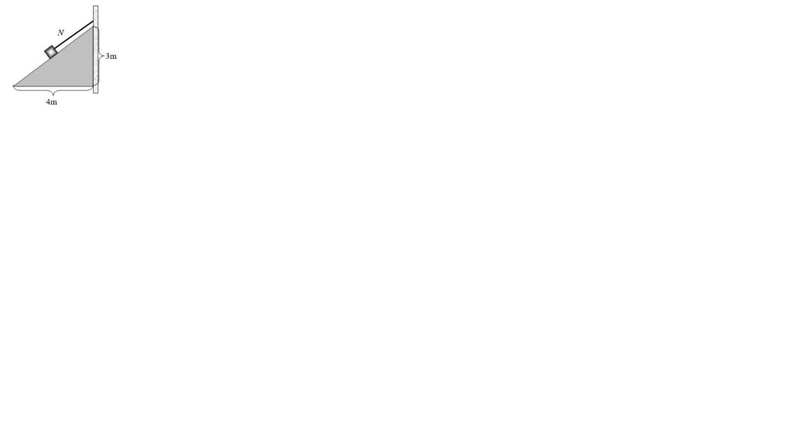
5. ***Tri tijela masa m1=4 kg, m2=16 kg i m3=8 kg, povezana užetom koje se ne rasteže i čiju masu možemo zanemariti, nalaze se na podlozi prikazanoj na crtežu. Faktor trenja je 0,1. Odredi smjer gibanja, ubzanje sustava te napetosti niti N1 i N2.
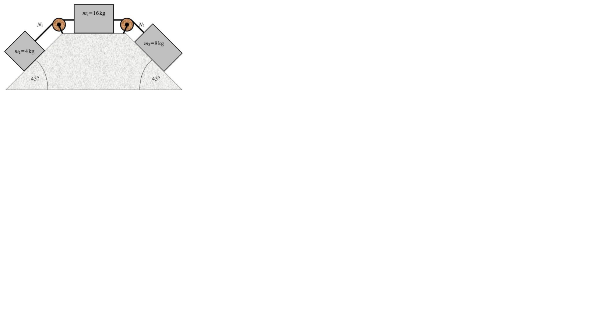
Sila trenja
- trenje je sila koja djeluje na tijelo kada ga nastojimo pokrenuti ili se ono već giba po podlozi, a djeluje u suprotnom smjeru od pomicanja tijela
- uzroci sile trenja su elektromagnetsko međudjelovanje molekula tijela i podloge te hrapavost površina tijela i podloge
- silu trenja pri pokretanju tijela nazivamo statičkim trenjem, a pri gibanju dinamičkim trenjem
- statičko trenje se javlja pri pokretanju tijela, a dinamičko pri gibanju tijela i statičko trenje je veće od dinamičkog
- trenje klizanja (statičko i dinamičko) ne ovisi o površini dodirnih ploha tijela i podloge već samo o sili pritiska okomito na podlogu: Ftr=μ*Fp=μ (koeficijent trenja)*m*g*(samo ako je podloga horizontalna)
- koeficijent ili faktor trenja nema mjernu jedinicu, a ovisi o vrsti i hrapavosti dodirnih ploha
- trenje može biti korisno ili štetno: trenje omogućuje držanje predmeta u rukama, a trenjem se također drže i različiti spojni elementi: čavli, vijci, čvorovi i tekstilna vlakna
- osim trenja klizanja postoji i trenje kotrljanja koje je općeniti manje od trenja klizanja
1. Automobil prilikom kočenja jednoliko usporavajući na suhom asfaltu (faktor trenja je 0,6) ostavi tragove dugačke 19 m. Kolika je brzina automobila u trenutku kad je vozač pritisnuo kočnicu?
2. Želimo li da tijelo mase 40 kg klizi po horizontalnoj podlozi stalnom brzinom, moramo na njega djelovati stalnom horizontalnom silom 80 N. Kolika je sila trenja? Koliki je faktor trenja klizanja?
3. Dva tijela masa m1=1 kg i m2= 4 kg, povezana užetom, nalaze se na horizontalnoj podlozi (crtež). Faktor trenja klizanja između tijela i podloge iznosi 0,1. Horizontalna sila kojom vučemo tijela iznosi Fvučna=50 N. Kolika je sila napetosti niti N užeta kojim su povezana tijela?
Slobodni pad
- tijela koja ispustimo s neke visine u blizini Zemljine površine padaju prema dolje zbog privlačnog djelovanja sile teže na ta tijela
- slobodni pad
- jednoliko ubrzano pravocrtno gibanje bez početne brzine, pri kojem sva tijela imaju jednaku akceleraciju (nema otpora sredstva)
- ne ovisi o masi tijela, nego o njegovom obliku zbog otpora zraka
- tu akceleraciju zovemo ubrzanje sile teže
- označavamo je sa g, a iznos joj je približno 9,81 m/s2 (iako njena vrijednost ovisi o tome na kojem se mjestu na Zemlji nalazimo (najveća je na polovima, a najmanja na ekvatoru))
- vrijede sve formule i grafovi kao za jednoliko ubrzano pravocrtno gibanje (samo što oznaku a zamijenimo sa g)
g=
Δv/Δt
v=g*t
v=2*g*s
s=
Δ1/Δ2
g*t2
1. Koliko dugo pada predmet ispušten s balkona zgrade na visini 20 m? Kolikom brzinom predmet udari o tlo?
2. U posljednoj sekundi slobodnog pada tijelo prijeđe 35 m. Koliko dugo tijelo pada i s koje je visine počelo padati?
3. Tijelo slobodno pada s visine h te udari o tlo za vrijeme t. Za koje će vrijeme tijelo udariti o tlo ako slobodno pada s visine 2 h?
4. Tijelo slobodno pada s visine h te udari o tlo brzinom v. Kolikom će brzinom tijelo udariti o tlo ako slobodno pada s visine 4 h?
5. Tijelo slobodno pada 1 s. S koje je visine tijelo slobodno palo i kolikom je brzinom udarilo o tlo?
6. U posljednjoj sekundi slobodnoga pada tijelo prijeđe 20 m. S koje je visine tijelo slobodno palo?
Sila i masa
sila
- fizička veličina kojom opisujemo jakost i smjer djelovanja jednog tijela na drugo pri njihovom međusobnom međudjelovanju
- 4 osnovne sile u prirodi su gravitacijska, elektromagnetska te slaba i jaka nuklearna sila
- prostor u kojem se događa međudjelovanje zove se polje
- oznaka je F, a mjerna jedinica N
- primjeri sila:
- sila teža (sila kojom Zemlja djeluje na sva tijela u svojoj blizini, a ima smjer i orijentaciju prema središtu Zemlje )
- težina (sila kojom tijelo djeluje na podlogu na kojoj se nalazi ili na ovjes o koji je ovješeno)
- elastična sila (sila koja vraća elastična tijela u prvobitni oblik nakon deformacije tijela)
- sila uzgona (sila u tekućinama koja ima orijentaciju suprotnu od sile teže te prividno smanjuje težinu tijela u tekućini)
- sila trenja (sila između tijela i podloge koja se javlja pri pokretanju i gibanju tijela, a ima uvijek orijentaciju suprotnu gibanju tijela)
- električna sila (sila između dva električki nabijena tijela)
- magnetska sila (sila između dva magneta ili magneta i predmeta s magnetskim svojstvima)
- gravitacijska sila (sila koja djeluje na nekoj udaljenosti između dva tijela)
- elektromagnetska sila (sila kada istodobno na tijelo djeluje i električna i magnetska sila)
- jaka nuklearna sila (sila koja se javlja u jezgri atoma i na okupu drži protone i neutrone u jezgri)
- slaba nuklearna sila (sila koja se javlja u jezgri atoma kod nuklearnih raspada jezgre)
- mjerimo je dinamometrom
- vektorska je veličina za koju vrijede sva pravila za zbrajanje vektora
- vektorski zbroj svih sila koje djeluju na tijelo zovemo rezultantna sila
- silu F možemo i rastaviti na komponente, na obrnut način od zbrajanja sila; npr.:
- za određivanje iznosa komponenti Fx i Fy, koristimo trigonometriju pravokutnog trokuta:
- tipični primjeri sile su sila teža i težina
- sila teža (sila koja djeluje na svako tijelo u blizini Zemljine površine)
Fg=m*g
- težina (sila kojom tijelo djeluje na podlogu na kojoj stoji ili na ovjes o koji je ovješeno):
G=m*g
- težina tijela je posljedica djelovanja sile teže, a razlika između tih sila je u hvatištu:
- na tijelo koje miruje na podlozi također djeluje sila teže, ali se ono ne giba jer svojom težinom djeluje na podlogu, a podloga djeluje na tijelo jednakom silom u suprotnom smjeru i uravnotežuje silu težu te tijelo ne pada
- tijela pokazuju svojstvo opiranja promjeni svojeg stanja mirovanja ili gibanja stalnom brzinom, a to svojstvo zovemo tromost, ustrajnost ili inercija masa
- fizička veličina kojom opisujemo tromost tijela
- skalarna je veličina
- oznaka za masu je m, a mjerna jedinica kg
- mjerimo vagom, ali je posredno možemo mjeriti i dinamometrom
- težina i masa tijela ne upućuju na tvar od koje je tijelo napravljeno, već gustoća
ρ=
m/V
g*t2
1. Dvije sile, od 3 N i od 4 N, djeluju na tijelo pod pravim kutom, a treća sila od 5 N djeluje napravcu rezultante dviju spomenutih sila u suprotnom smjeru. Kolika je rezultanta svih triju sila? 2. Na tijelo djeluju 4 sile, kao na crtežu. Kolika je rezultantna sila po iznosu i smjeru?
3. Sanjke vučemo silom 20 N po ravnoj snježnoj podlozi pod kutom 45°. Kolike su komponente sile kojom vučemo sanjke u vertikalnom i horizontalnom smjeru? 4. Rastavi zadanu silu 𝐹⃗ na dvije komponente duž zadanih pravaca:
5. Od koje je čiste tvari napravljeno tijelo obujma 100 cm3 ako na stol na kojm leži pritišće silom 2,65 N?
Impuls sile i količina gibanja
Impuls sile
- umnožak vrijednosti neke sile sa njegovim intervalom koliko ta sila djeluje
δl=F*δt
količina gibanja
- umnožak mase tijela i njegove brzine (dviju fizikalnih veličina o kojima ovisi djelovanje tijela pri sudaru s drugim tijelom)
δp*=m*δv
- zakon očuvanja količine gibanja
- Ukupna količina gibanja u zatvorenom sustavu tijela stalno je ista bez obzira na to kako se mijenjale njihove pojedine količine gibanja.
- primijenjuje se na primjerima sudara tijela
- neelastičan sudar
m1v1+ m2v2+ mnvn=(m1+m2+...+mN)v
- elastičan sudar
m1v1+ m2v2+ mnvn= m1v'1+ m2v'2+ mnv'n
Zajedničke informacije
- impulsom sile mijenjamo količinu gibanja (drugi Newtonov zakon)
1. Skakačica u vodu skače s daske i opisuje putanju prikazanu crtežom. Količina gibanja skakačice je najveća u točki:
2. Koliki je impuls sile F čija je ovisnost o vremenu t prikazana na grafu? Obrazloži svoj odgovor!
3. Dva tijela imaju jednake količine gibanja, ali je masa drugog tijela dva puta veća od mase prvog tijela, tj. m2 = 2m1. Koliki je omjer njihovih brzina v2/v1?
4. Vagon mase 10t giba se brzinom 24m/s i udari o vagon jednake mase koji stoji, pa se nakon sudara oba vagona gibaju zajedno (crtež). Kolika je njihova zajednička brzina v kojom se gibaju nakon sudara?
5. Svemirska raketa mase 10 tona odbaci u svemir iskorišteni treći stupanj rakete mase 4 tone i pritom joj se brzina promjeni od 1000 m/s na 1500 m/s. Izračunajte kojom se brzinom i u kojem smjeru giba odbačeni dio?
6. Crtež prikazuje vagon mase 13500kg koji se giba stalnom brzinom 18m/s po horizontalno postavljenim tračnicama (trenje je zanemarivo) na koji padne teret mase 4500kg. Kolika će biti brzina v vagona s teretom?
7. Pri ispaljivanju granate u horizontalnom smjeru top se pomakne za 0,5 m. Masa topa je 1 t, a masa granate 5 kg. Početna brzina granate je 1000 m/s. Kolika je srednja vrijednost sile trenja između topa i horizontalne podloge?
8. Dva automobila jednakih masa i brzina sudare se savršeno neelastično na raskrižju dvaju okomitih ulica (crtež). Ako su mase automobila 1t, a njihove brzine prije sudara 10m/s, izračunajte njihovu zajedničku brzinu nakon sudara.
9. Dva tijela masa m1=3kg i brzine v1=+8m/s, te m2=2kg i brzine v2 =−5m/s centralno se sudare gibajući se jedno prema drugom. Ako je sudar savršeno elastičan izračunajte kolika je brzina svakog tijela nakon sudara?
10. Ledolomac mase 10000t giba se s ugašenim motorima brzinom 5m/s i nalijeće na nepomičnu santu leda koju gura ispred sebe brzinom 1m/s. Kolika je masa sante zanemarimo li otpor vode?
Rad i snaga
- rad je u fizici samo kad pomaknemo tijelo na koje djelujemo nekom silom
- rad je umnožak sile i prijeđenog puta tijela, a mjerna jedinica je J:
-W=F*s
- ako sila ne djeluje u smjeru pomaka tijela, treba ju rastaviti na komponente i gleda se samo ona komponenta koja je na istom pravcu kao i pomak; komponenta okomita na pomak daje rad 0!:
- obavljeni rad može se izračunati kao površina u F(s) grafu:
- rad se obavlja samo kad se tijelo giba; dok miruje ne obavlja se rad
- rad centripetalne sile je nula jer je sila okomita na brzinu tijela
- spominjali smo i elastičnu oprugu, koliki bi bio rad elastične sile (ona je promjenjiva sila)?
- mogli bismo napraviti pokus gdje bismo mjerili ovisnost sile o pomaku i iz grafa dobiti rad kao površinu:
- snaga je brzina obavljanja nekog rada, tj. omjer rada i vremena a mjerna jedinica je W:
p=
W/t
- ukoliko se tijelo pod utjecajem sile giba jednoliko (stalnom brzinom), snagu možemo izračunati iz formule: P=F*v
1. Automobil mase 1200 kg uspinje se po ravnoj strmoj cesti duljine 200 m. Visinska razlika između točaka na početku i na kraju uspona iznosi 30 m. Koliki je rad gravitacijske sile na tom dijelu ceste?
2. Koliki rad treba obaviti da bi se knjiga mase 1,5 kg podignula s tla na visinu 160 cm?
3. Koliki rad moramo obaviti ako knjigu iz drugog zadatka držimo na toj visini 10 minuta?
4. Stara jedinica za snagu, konjska snaga (KS), određena je kao snaga potrebna za dizanje mase od 75 kg na visinu 1 m u vremenu jedne sekunde. Kolika je snaga motora od 55 KS izražena u vatima? Za akceleraciju Zemljine sile teže uzmite normiranu vrijednost g=9,80665 ms-2.
5. Da bi, pomoću kosine duge 8 m, podignuo teret na visinu 3 m, čovjek gura teret vodoravno usmjerenom silom 200 N. Koliki rad obavi čovjek? Kolika je snaga čovjeka, ako mu za taj posao treba 12 sekundi?
Gibanje naboja u električnom polju
- gibanje naboja u električnom polju slično je horizotalnom hicu:
1. Elektron kinetičke energije 600 eV uleti u prostor između dvije horizontalne metalne ploče i to u sredinu i paralelno pločama. Razlika potencijala među pločama je 1 V, razmak ploča je 1 cm a duljina ploča je 5 cm. Odredite vertikalnu komponentu brzine elektrona kada napusti prostor između ploča. Masa elektrona je 9,11·10-31 kg.
2. U homogeno elektrostatičko polje jakosti 2000 N/C uleti elektron početnom brzinom v0=104 m/s okomito na silnice polja. Koliku kinetičku energiju iskazanu u elektronvoltima ima elektron 10-10 s nakon ulaska u polje?
3. Elektron ulazi u homogeno električno polje između ploča razmaknutih za 1cm, točno po sredini, početnom brzinom v0=5106m/s kako je prikazano na crtežu. Elektron napušta polje tik uz gornju ploču. Duljina ploča je 2cm. Izračunajte jakost električnog polja između ploča i napon na pločama. Kako je nabijena gornja, a kako donja ploča? Zanemarite djelovanje gravitacijske sile. (me=9,110−kg)
4. Na crtežu je prikazano gibanje snopa elektrona između horizontalno postavljenih pločica koje mogu snop otklanjati u vertikalnom smjeru (osciloskop). Elektroni ulaze između pločica točno po sredini početnom brzinom v0=8106m/s. Jakost električnog polja između pločica iznosi 6·103N/C. Pločice su duge 4cm, a udaljenost pločica od ekrana (zastora) na koji udara snop je 12cm (crtež). Zanemarite gravitacijsko djelovanje. (me=9,1·10−kg) a) Za koliko se elektron pomakne od svog smjera pri izlasku iz pločica? b) Pod kojim kutom napušta otklonske pločice?
5. Koliku brzinu postigne elektron mase ubrzan u televizijskoj cijevi naponom od 20 kV?
Magnetsko polje i magnetska indukcija
- magnet ime dobiva po starovjekovnoj pokrajini Magneziji iz koje se izvlaćio magnetit (željezna ruda koja je privlačila železne predmete)
- magneti
- tvari koje imaju svojstvo privlačenje predmeta od željeza, nikla i kobalta te njihovih legura
- osim prirodnih magneta (željezne rude), postoje i umjetni koje dijelimo na permanentne i elektromagnete - permanentni magneti izrađuju se od posebnih željeznih legura i trajno zadržavaju magnetska svojstva
- krajevi permanentnog magneta nazivaju se magnetski polovi (postoje sjeverni i južni) i na njima su magnetske sile najjače; istoimeni polovi se odbijaju, a raznoimeni privlače
- elektromagneti su zavojnice s jezgrom od mekog željeza koji su magneti samo dok kroz zavojnicu teče struja
- ako bismo magnet kidali na sve manje i manje djeliće, svaki od tih djelića zadržao bi oba pola- na možemo dobiti samo jedan magnetski pol (za razliku od električnih naboja)→kažemo da postoje magnetski dipoli, a ne postoje magnetski monopoli
- magnetsko polje je prostor u kojem se očituje djelovanje izvora tog polja na tijela koja se u tom prostoru nalaze
- izvori magnetskog polja mogu biti: stalni (permanentni) magneti, promjenjivo električno polje, pojedinačni naboji u gibanju, električna struja i neke elementarne čestice koje imaju magnetski moment (elektroni, protoni)
- planet na kojem živimo također posjeduje magnetsko polje (zbog željeznih ruda u kori, tvrdoj jezgri od željeza i nikla te struje iona u tekućem dijelu jezgre) - postojanje magnetskog polja Zemlje koristimo za orijentaciju pomoću kompasa - magnetski i Zemljini polovi ne poklapaju se u istoj točki (južni magnetski pol je na oko 74° sjeverne zemljopisne širine i 100° zapadne zemljopisne dužine- sjeverna Kanada; dok je sjeverni magnetski pol na jugu, u istočnom Atlantiku) - položaj Zemljinih magnetskih polova nije vremenski stalan, nego je podvrgnut neprestanim malim promjenama - položaj zemljopisnog juga možemo odrediti točno u solarno podne u smjeru Sunca (kad je Sunce najviše na nebu) - odstupanje zemljopisnog pravca sjever-jug i pravca koji pokazuje magnetska igla zovemo magnetska deklinacija a ona je različita na različitim mjestima, a mijenja se i u vremenu i vrlo je važna za točnu navigaciju - magnetsko polje opisujemo zorno pomoću magnetskih silnica; tangente na silnicu u nekoj točki pokazuju smjer magnetskog polja, a uvijek su zatvorene krivulje:
- Oersted je otkrio da se magnetska igla otklanja u blizini vodiča kojim teče struja te zaključio da električna struja u prostoru oko sebe stvara magnetsko polje - smjer magnetskog polja određujemo pravilom desne ruke: Ako palac pokazuje smjer struje, svijeni prsti pokazuju smjer kojim silnice obilaze vodič. - magnetsko polje opisujemo fizikalnom veličinom koju zovemo magnetska indukcija, B (T)
- μ0 =4π∙10-7 TmA-1 je apsolutna permeabilnost vakuuma, a μr relativna permeabilnost tvari
- osim magnetske indukcije definira se i veličina koja ne ovisi o sredstvu već samo o strujama koje proizvode magnetsko polje→ to je jakost magnetskog polja, H (A/m):
1. Valjkasta zavojnica bez jezgre, duljine 20 cm sa 200 zavoja, omskog otpora 3 Ω priključena je na napon 1,5 V. Koliki su magnetska indukcija i jakost magnetskog polja u sredini zavojnice?
2. Pri jakosti polja 600 A/m magnetska indukcija u željeznoj jezgri zavojnice je 0,8 mT. Kolika je indukcija unutar zavojnice ako pri istoj vrijednosti struje izvadimo jezgru? Relativna permeabilnost željeza je 700.
3. Kolika struja mora prolaziti vrlo dugom ravnom žicom ako želimo da je na udaljenosti 5 cm od žice indukcija magnetskog polja 0,4 mT?
4. Kroz dva duga paralelna ravna vodiča, razmaknuta za 1 m, prolaze struje jednakih jakosti I1=I2= 10 A u suprotnom smjeru. Odredite magnetsko polje u točki T koja je od oba vodiča udaljena za 1 m (crtež).
5. Dugačka zavojnica ima 10 navoja po centrimetru duljine. Ukupni otpor zavojnice je 89,5 Ω. Krajevi zavojnice spoje se s izvorom elektromotornog napona 45 V i unutarnjeg otpora 0,5 Ω. Unutar zavojnice se umetne šipka i mjerenjem se ustanovi da je unutar zavojnice magnetsko polje 0,1 T. Kolika je relatvna magnetska permeabilnost materijala od kojeg je načinjena šipka?
Gibanje naboja u magnetskom polju
- na naboj koji se giba u magnetskom polju djeluje Lorentzova (magnetska) sila FL=QvBsinα
- ako je α= 0°, naboj nastavlja gibanje bez promjene i utjecaja polja
- ako je α=90° , naboj se giba po kružnici polumjera r zbog utjecaja polja te vrijedi:
- Određivanje smjera Lorentzove sile (pravilo desne ruke): Ispruženi prsti desne ruke pokazuju smjer magnetskih silnica, palac pokazuje smjer brzine. Smjer vektora sile kojom magnetsko polje djeluje na pozitivno nabijenu česticu okomito izlazi iz dlana.
- ako je čestica uletjela u magnetsko polje pod nekim drugim kutom α:
- električno i magnetsko polje dijelovi su jedinstvenog elektromagnetskog polja i vrlo često istodobno na naboj djeluju oba polja
- Usporedba električnog i magnetskog polja
- dok električno polje djeluje jednakom silom na mirne i na naboje u gibanju, magnetsko polje ne djeluje na naboje u mirovanju
- električna sila djeluje uvijek na pravcu djelovanja električnog polja, dok je smjer magnetske sile okomit na magnetsko polje i na pravac brzine naboja
- električna sila ne ovisi o brzini naboja nego samo o naboju i jakosti električnog polja, dok magnetska osim o magnetskom polju i naboju ovisi i o brzini naboja i o kutu između brzine i polja
- budući da je magnetska sila uvijek okomita na pravac brzine naboja, ona uzrokuje kružno gibanje te mijenja smjer brzine, ali ne i iznos (dok se naboj u električnom polju ubrzava,rad magnetske sile je nula jer je magnetska sila okomita na pomak naboja)
1. Elektron se giba po kružnoj stazi polumjera 3 cm, okomito na magnetsko polje indukcije 0,2 mT. Kolika je brzina elektrona?
2. Elektron se giba jednoliko po pravcu, brzinom 0,5 m/s, kroz međusobno okomito homogeno električno i magnetsko polje. Kolika je jakost električnog polja ako je indukcija 1 T?
3. Putanja elektronskog snopa u homogenom magnetskom polju indukcije 7 mT u vakuumu je kružni luk polumjera 3 cm. Kolika je energija jednog elektrona u tom snopu?
4. Elektron se giba po kružnici brzinom 5·106 m/s u magnetnom polju 2·10-2 T. Za koliki iznos se promijenila kinetička energija elektrona nakon vremena od jednog perioda?
5. Proton uleti brzinom 105 m/s u točki A okomito na silnice homogenog magnetnog polja 0,8 T kao na crtežu. a) Na kojoj udaljenosti od točke A će izaći iz polja? Nacrtajte putanju! b) Koliko dugo će boraviti u magnetnom polju? c) Kojom brzinom će izaći iz magnetnog polja? d) Kolika je promjena kinetičke energije protona pri ulasku i izlasku iz magnetnog polja? Zadano: mp = 1,6710-27 kg,; e = 1,6·10-19 C
6. Okomito na silnice homogenog magnetnog polja indukcije 1,5 T ulijeću jezgre izotopa atoma vodika deuterija i tricija (1H2 i 1H3). Koliki mora biti omjer brzina tih izotopa da bi polumjeri kruženja izotopa bili jednaki?
ukoliko kroz vodič teče struja i vodič se nalazi u magnetskom polju, na njega djeluje sila:
F evB
F N F N evB
F nV evB nSl evB
F BIl
rezultantnu silu na vodič kojim teče struja u magnetskom polju zovemo Amperéova sila:
F BIlsin
- ukoliko se u prostoru nalaze dva jednako duga paralelna vodiča razmaknuta za udaljenost r i njima teku struje, oko
jednog vodiča nastaje magnetsko polje koje utječe na drugi vodič:
Magnetski tok i inducirani napon
• Magnetski tok
• predočen skupom silnica što prolaze kroz neku plohu
• mjerna jedinica je Wb
• može se mijenjati gibanjem vodiča u magnetskom polju, gibanjem magneta s obzirom na
vodič, rotacijom zavojnice u magnetskom polju, rotacijom magnetskog polja, promjenom struje u
zavojnici elektromagneta koji proizvodi polje…
• elektromagnetska indukcija
• Michael Faraday je pokusima uočio da promjenjivo magnetsko polje stvara električno polje→
• primjene elektromagnetske indukcije: generatori, transformatori, induktori, mikrofoni, betatron, električni generatori
• indukcija gibanja vodiča: (slika)
• obavljeni rad pri prijenosu naboja s jednog kraja vodiča na drugi je
W=-FL*l=-Q*v*B*sin(α)*l/:Q
UI=-B*l*v*sin(α)
• gibanjem vodiča mijenja se i površina koju vodič obuhvaća u magnetskom polju:
δS=l*v*δt
δφ=B*δS=B*l*v*δt
δφ=UI*δt
• negativan predznak posljedica je zakona očuvanja energije
• Lenzovo pravilo: Električna struja koja nastaje zbog induciranog napona ima takav smjer da proizvodi magnetski tok koji se suprotstavlja promjeni toka zbog kojega je nastala.
• ista formula vrijedi i za zavoj od žice→ što ako imamo zavojnicu?
• inducirani napon se poveća N puta:
UI=-N*
δφ/δt
w*C
- kada se masivni metalni predmet nalazi u promjenjivom magnetskom polju (odnosno giba se kroz
magnetsko polje), u njemu se induciraju tzv. vrtložne (Foucaultove) struje→ to su male zatvorene
strujne petlje unutar vodiča slične vrtlozima u fluidu
- vrtložne struje slične su trenju u mehanici (energiju pretvaraju u toplinu)
Samoindukcija i induktivitet
- ukoliko se jedna zavojnica nalazi u blizini druge zavojnice u kojoj se mijenja jakost struje, na krajevima se prve
zavojnice inducira elektromotorni napon- ta pojava se zove međuindukcija:
- M je koeficijent međuindukcije
- induciranje napona između krajeva jedne zavojnice promjenom jakosti struje kroz nju nazivamo
samoindukcija:
- L je induktivitet zavojnice u H
- pogledajmo shemu kruga i objasnimo što se događa:
- magnetsko polje djeluje Ampereovom silom na vodič kojim teče struja te se taj vodič pomakne (dobije
kinetičku energiju)
- budući da je vodič dobio energiju od magnetskog polja, očito je u magnetskom polju sadržana energija koju
zovemo energija magnetskog polja:1 2i
i
S I
U N N l t
IU M t
U N l t
IU L t
= −
- magnetsko polje djeluje Ampereovom silom na vodič kojim teče struja te se taj vodič pomakne (dobije
kinetičku energiju)
- budući da je vodič dobio energiju od magnetskog polja, očito je u magnetskom polju sadržana energija koju
zovemo energija magnetskog polja:1 2i
i
S I
U N N l t
IU M t
= −
= − 2
i
i
S I
U N l t
IU L t
= −
= − 21
2
BE L I=
Izmjenicna struja
• Izmjenična struja
• tip struje kod koje se smjer stalno mijenja u pravilnim intervalima zbog mijenjanja smjera napona u izvoru
• izrazi za izmjeničnu struju i napon su:
i=IMAX*sin(w*t)
u=UMAX*sin(w*t)
• zbog mijenjannja izmjenične struje po iznosu i smjeru, njezina srednja vrijednost jednaka je nuli
• pri prolasku struje kroz trošilo snaga i rad razmjerni su kvadratu jakosti struje pa toplinski učinak izmjenične struje iznosi efektivne vrijednosti struje i napona
• efektivna vrijednost izmjenične struje
• vrijednost istosmjerna struje stalne jakosti koja proizvodi jednaki toplinski učinak u određenom vodiču kao i izmjenična struja:
Ief=
IMAX/7
2
Uef=
UMAX/7
2
• reaktivni otpori
• otpor zavojnice (induktivni otpor) i kondenzatora (kapacitivni otpor) u krugu izmjenične struje
- na omskom otporniku u krugu izmjenične struje su struja i napon u fazi:
• induktivni otpor zavojnice (jalov otpor)
• otpor uzrokovan samoindukcijom koja nastaje u zavojnici zbog stalne promjene izmjenične struje:
RL=L*w
• kroz induktivni otpor struja zaostaje za naponom za 90°:
• ovakav otpor ne pretvara električnu energiju u Jouleovu toplinu već u magnetsku energiju magnetskog polja zavojnice
• kapacitivni otpor
• otpor kondenzatora u krugu izmjenične struje:
Rc=
1/7w*C
• ako je induktivni otpor jednak kapacitivnom, dolazi do pojave rezonantne frekvencije
• u rezonantnoj je frekvenciji Z = R = minimum, struja je maksimalna i u fazi s naponom te se ostvaruje maksimalni prijenos energije s jednog titrajnog sustava na drugi kad su im frekvencije jednake
f=
1/T
=
1/2*φ*L*C
• izmjenična struja kroz kondenzator prethodi naponu za 90°:
• serijski RLC krug sastoji se od otpornika (R), kondenzatora (C) i zavojnice (L) serijski spojene u krugu izmjenične struje:
• vektorski dijagrami otpora i napona za serijski RLC krug
• impedancija je ukupni otpor u krugu izmjenične struje:
Z=R2+(RL-RC)2
• fazni pomak ( ) napona u odnosu na struju je:
tg(φ)=
RL-RC/R
cos(φ)=
R/Z
• za serijski RLC krug vrijedi Ohmov zakon:
Z=
U/I
• reaktivna (jalova) snaga je umnožak efektivnih vrijednosti induktiviteta/kapaciteta i efektivne struje (tada je radna snaga nula!):
PR=UC*IC=UL*IL (var)
• prividna snaga jest produkt napona istruje koja teče strujnim krugom te nije u fazi s naponom:
PP=U*I (VA)
• radna snaga ovisi o naponu, struji i faznom pomaku:
P=U*I*cos(φ) (W)
- trokut snage:
• faktor snage (cos)
• omjer radne i prividne snage
• ona poprima vijednosti između 0 i 1 (poželjno je da bude bliže 1)
PP=P2+Pr2
• ako u uređajima sa zavojnicom (npr. motorima) postoji mali faktor snage (velika fazna razlika između napona i struje, velika jalova struja i velika jalova snaga veliki Jouleovigubici) i spojimo s njom paralelno kondenzator, povećat će se faktor snage i smanjiti jalova snaga
- takav postupak se naziva kompenzacija jalove snage
• transformatori
• uređaji koji prenose električnu energiju iz primarnog u sekundarni krug posredstvom magnetskog polja
• sastoji se od dvije zavojnice, primarne sa N1 zavoja te sekundarne sa N2 zavoja, koje se motaju po zatvorenoj željeznoj jezgri (induktivno spajanje)
• shematski prikaz transformatora:
• omjer transformacije je:
N2/N1
=
I1/I2
=
U2/U1
- pomoću transformatora se izmjenična struja može transformirati u jako slabe (s visokim naponom) te se smanjuju Jouleovi gubici pri prijenosu na veće udaljenosti
Harmonijsko titranje
• harmonijsko titranje
• gibanje materijalne točke oko položaja ravnoteže opisano određenim veličinama
• primjeri titranja tijela: titranje atoma i molekula, žice instrumenata, tijela ovješena na oprugu, električni titrajni krug
• svako titranje uzrokuje sila koja nastoji sustav vratiti u položaj ravnoteže
• određene veličine:
➢ period (T): trajanje jednog potpunog titraja (tijelo u tom vremenu dvaput prijeđe kroz položaj ranoteže)
➢ frekvencija (f): broj titraja u jednoj sekundi (
f=
1/T
)
➢ elongacija (x): bilo koji pomak materijalne točke od položaja ravnoteže
➢ amplituda (A): najveći pomak materijale točke od položaja ravnoteže
• harmonijsko titranje
• najjednostavnije titranje koje uzrokuje elastična sila (FEL=(-)k*x)
• sustav koji titra u harmonijskom titranju nazivamo jednostavni harmonički oscilator
- uočimo u gornjem izrazu jedan konstantan dio ( k/m) pomoću kojeg opisujemo period titranja:
T=2*φ*
m/k
• titranje tijela moguće je predočiti trigonometrijskim funkcijama:
x=A*sin(w*t+φ)
v=A*w*cos(w*t+φ)
a=-A*w2*sin(w*t+φ)
• Grafički prikaz titranja (primjer)
primjer: Prikaži grafički titranje tijela zadanog jednadžbom
usporedimo zadanu jednadžbu s jednadžbom za x i uočimo da je A ono što piše ispred funkcije sinus → A=2cm
nadimo na isti način period:
φ*t/2s
=
2*φ*t/T
=4s
podijelimo period na 4 jednaka dijela (4:4= 1) i napravimo tabelu:


 >
>
 >
>


 >
>
 >
>


, slobodni pad (dolje)")